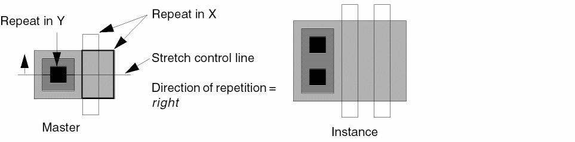
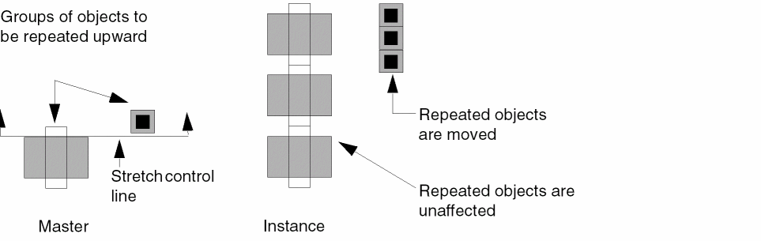
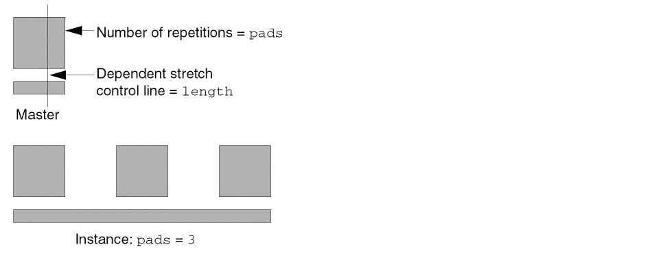
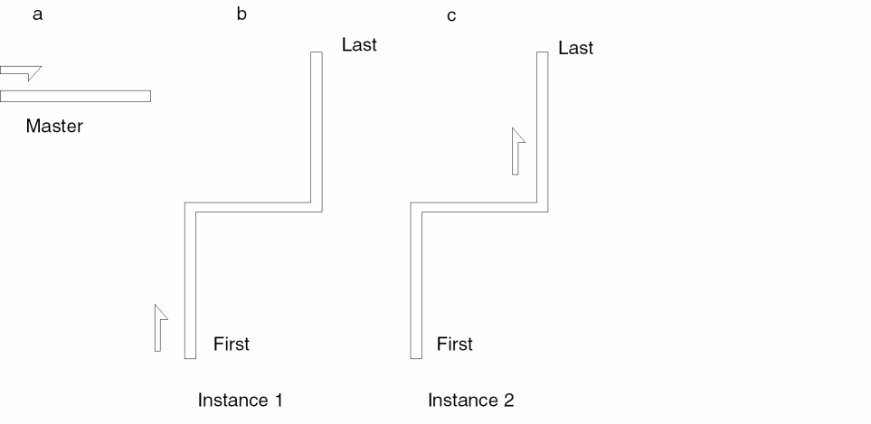

6
Creating Graphical Parameterized Cells
This chapter describes the Virtuoso® parameterized cell software, which provides a graphical user interface that lets you create parameterized cells (Pcells) for placement in design layouts. You define the master cell and its parameters with this tool and can change parameter values for each instance you create in a layout cellview.
This chapter contains the following information:
- Adding the Pcell Menu
- Stretch Commands
- Conditional Inclusion Commands
- Repetition Commands
- Parameterized Shapes Commands
- Repetition Along Shape Commands
- Reference Point Commands
- Inherited Parameters Commands
- Parameterized Layer Commands
- Parameterized Label Commands
- Parameterized Property Commands
- Parameters Commands
- Compile Commands
- Make Ultra Pcell Command
- Customizing the Pcell Compiler
- Creating Complex Pcells
- Converting Graphical Pcells to SKILL Code
Adding the Pcell Menu
To add the Pcell menu, select Launch – Plugins – Pcell from any VLS, VSE, or VSE Symbol editor window.
Stretch Commands
Stretch parameters change the size of all objects in a cellview that are not excluded from the stretch. You can stretch objects horizontally, vertically, or both.
- Drawing Stretch Control Lines
- Defining Stretch Parameters
- Specifying Stretch Directions
- Specifying a Reference Dimension
- Setting Minimum and Maximum Values
- Stretching Paths
- Using Stretch with Repetition
- Using Stretch with Conditional Inclusion
-
Using the Stretch menu, including
- Stretching objects horizontally (see “Stretch in X”)
- Stretching objects vertically (see “Stretch in Y”)
- Stretching a selected set of objects instead of all objects in the cellview (see “Qualify”)
- Changing parameters assigned to stretch control lines (see “Modify”)
- Changing the location of the stretch control lines and their parameters (see “Redefine”)
Drawing Stretch Control Lines
To add a stretch parameter to your cellview, you must first draw a stretch control line. Stretch control lines determine where to begin the stretch and which direction to stretch. Horizontal stretch control lines control vertical stretching, and vertical stretch control lines control horizontal stretching.
A horizontal stretch control line controls whether objects stretch upward from the line, downward from the line, or both.
A vertical stretch control line controls whether objects stretch to the right of the line, to the left of the line, or both.
You can use as many stretch control lines as you want in a single cellview. The Virtuoso® Parameterized Cell (Pcell) program treats each stretch control line independently.
The following example shows two stretch control lines that stretch a transistor horizontally and vertically. These stretch control lines are named length and width.
You can limit the effect of a stretch control line by using the Qualify command. In the following example, you can exclude the contact and its surrounding metal from the stretch so that only the poly and diffusion are stretched.
Stretch Control Line Rules
When you draw a stretch control line, follow these rules:
-
Draw stretch control lines with orthogonal snap (only horizontal and vertical line segments).
You can set the default snap mode using Design – Options – Display. -
Do not reverse the direction of a stretch control line.
You can draw a stretch control line around objects you want to exclude from the stretch, but the line cannot double back on itself. Horizontal stretch control lines must be drawn from either right to left or left to right. Vertical stretch control lines must be drawn from either top to bottom or bottom to top. Once you start drawing a stretch control line in one direction, you cannot go back.
-
Although horizontal stretch control lines can contain vertical segments, do not draw horizontal stretch control lines that cross horizontal edges of objects included in the stretch.
Vertical stretch control lines cannot intersect vertical edges of objects included in the stretch. The first segment that you draw determines if the stretch control line is a horizontal or vertical stretch control line.
After drawing a stretch control line, you must define it. You can then refer to the stretch control line in other parameter definitions.
Deleting a Stretch Control Line
After you have made the
To delete the stretch control line,
Defining Stretch Parameters
After you width, the system prompts you to enter a value for width when you place an instance of the Pcell. The definition can be a SKILL expression that references other parameter definitions in the Pcell, such as gates*2. The system uses the value for the repetition parameter gates to compute the value for the stretch parameter.
If you want to apply the same parameter value to more than one stretch line, use the same definition. For example, when you use the definition contWidth for both horizontal and vertical stretch control lines, the Pcell program stretches the following square contact the same amount in each direction so the contact remains square.
Specifying Stretch Directions
When you define a stretch control line, you must specify the stretch direction. Choose left, right, or left and right for a horizontal stretch control line. Choose up, down, or up and down for a vertical stretch control line. If an object is on one side of the stretch control line, it moves rather than stretches. Every vertex of the object stretches the same amount, which has the effect of moving the object. Objects move only if they lie entirely on the side of the stretch direction.
Stretching in One Direction
If the stretch direction is right or left, the Pcell program repositions every vertex to the right or left of the stretch control line by the amount specified. The stretch affects all objects (rectangles, paths, polygons). Objects in repetition groups are excluded from the stretch by default.
Stretching in Two Directions
If the direction is left and right or up and down, the objects stretch or move by half the parameter value on each side of the stretch control line.
In the following example, the stretch control line is named gap, the direction of the stretch is up and down, and the parameter value is 10. Objects that lie entirely above the stretch control line move up half the parameter value. Objects that lie below the stretch control line move down half the parameter value. Objects crossed by the stretch control line stretch up half the parameter value and down half the parameter value.
Stretching Edges Coincident with the Stretch Control Line
Objects are stretched only if they are crossed by a stretch control line. If the edge of an object is coincident with a stretch control line, the object moves.

Specifying a Reference Dimension
All stretch control lines use a reference dimension to determine the amount of stretch. By default, the reference dimension is the length of the shortest edge crossed by the stretch control line.
When you place an instance, you specify a parameter value. The parameter value is the width or length of the object after the stretch is complete, not the amount to stretch. The Pcell program computes the amount of stretch by subtracting the reference dimension from the parameter value. If the parameter value is greater than the reference dimension, the objects are enlarged. If the parameter value is less than the reference dimension, the objects are compressed.
You can specify a reference dimension or use the default reference dimension. To specify your own reference dimension, use a measurement from an important object that is included in the stretch, such as the length or width of a gate.
For example, if you want to expand the diffusion layer in a transistor but your stretch control line crosses the contacts, the default reference dimension is the length of the edge of the contact, the shortest edge crossed by the stretch control line. If you exclude the contacts from the stretch, you do not want to use their dimension for the reference dimension. If the contacts are included in the stretch, but you want the parameter width to refer to the width of the gate, set the reference dimension to equal the length of the diffusion edge of the transistor.
If the contacts and their surrounding metal are excluded from the stretch and the direction of stretch is up and down, the contacts remain centered while the diffusion and poly stretch.
The system stretches all objects whose dimensions are equal to the width.
The system also uses the reference dimension value as a default value for stretch parameters. You control how the system does this with the stretchPCellApplyToName environment variable.
Setting Minimum and Maximum Values
You can set minimum and maximum values for a stretch parameter (or for all the parameters in a stretch expression) so that an object is not stretched more or less than the design rules allow. For example, you might define a transistor with a minimum channel length of 1.25 microns and a maximum length of 10 microns. If you try to place an instance of the cell with a channel length less than 1.25 or greater than 10, the Pcell program reverts to the previous value of the parameter before generating the instance.
If you do not set a minimum value, the system uses a default of 0.0 and does not perform minimum range checking. If you do not set a maximum value, the system uses a default of 0.0 and does not perform maximum range checking. If you set a maximum value that is less than the
Applying Default, Minimum, and Maximum Values
You specify the Reference Dimension, Minimum Value, and Maximum Value fields in the Stretch in Y and Stretch in X forms.
For the Name or Expression for Stretch field, you specify either the name of a parameter (variable), such as length, or a SKILL expression. The SKILL expression references one or more parameters of the Pcell.
The stretchPCellApplyToName environment variable controls how the system applies the reference dimension (default) and minimum and maximum values. You can set the stretchPCellApplyToName environment variable in your .cdsenv file or in the Command Interpreter Window (CIW). The default is t.
stretchPCellApplyToName environment variable is available in releases starting with 4.4.6 and in the following releases:
4.4.5 100.7
4.4.3 100.76
4.4.2 100.18
Using stretchPCellApplyToName Equal to t (the default)
When stretchPCellApplyToName is set to t, the software behaves as described in this section.
-
Reference dimension
The system uses the number in the Reference Dimension field as the default value for the parameter name you specify in the Name or Expression for Stretch field. When you specify an expression, the system uses the reference dimension number as the default value for every parameter in the expression. -
Minimum and maximum value
The range specified by values in the Minimum Value and Maximum Value fields applies to the parameter name you specify in the Name or Expression for Stretch field.
When you specify an expression, the system performs minimum-maximum range checking on every parameter in the expression and on the result obtained from evaluating the expression.
When you place a Pcell instance and change the default value for a parameter to a value that is outside of the specified minimum-maximum range, the system changes the out-of-range parameter back to its previous value when you press the Tab key or click to place the instance. The system also issues a warning message in the CIW.
When you place a Pcell instance and change the default value for the parameters in an expression, and the value of the expression falls outside of the minimum-maximum range, the system uses the specified minimum or maximum value as the value of the expression. The system does not issue a warning message.
For example, the Stretch in X form defines a Pcell master as follows:
When you select the Pcell to place an instance and change the value of parm_2 to 6.0, as soon as you press the Tab key or click to place the instance, the system issues a warning in the CIW and changes the value of parm_2 back to 1.0.
When you select the Pcell to place an instance and change the value of parm_2 to 4.0, the system accepts the value until it evaluates the expression when you click to place the instance. Because the expression evaluates to 10.0, which is more than the maximum of 5.0, the system uses the maximum value of 5.0 instead of the result of the expression.
Using stretchPCellApplyToName Equal to nil
When stretchPCellApplyToName is set to nil and you specify a single parameter name in the Name or Expression for Stretch field, the software behaves the same as when stretchPCellApplyToName is set to t (as described previously).
When stretchPCellApplyToName is set to nil and you specify an expression in the Name or Expression for Stretch field, the software behaves similarly to when stretchPCellApplyToName is set to t (as described previously), with the following exceptions:
-
Reference dimension
The system uses 0.0 as the default value for all parameters named in the Name or Expression for Stretch field. -
Minimum and maximum value
The system does not perform minimum-maximum range checking on the parameters in the expression but does perform minimum-maximum range checking on the result obtained from evaluating the expression.
Stretching Paths
You can stretch a path in two ways:
- Stretch path length using a stretch control line that bisects one or more of the path segments in a perpendicular direction.
- Stretch path width by setting the direction of the stretch to either up and down or right and left and by using a stretch control line that lies on every path vertex, including the startpoints and the endpoints.
The first figure illustrates a path whose width is controlled by the stretch control line if the direction is up and down. The second figure illustrates a path whose length is controlled by the stretch control line if the direction is right and left.
Using Stretch with Repetition
You can use stretch parameters with repetition parameters to
- Stretch repeated objects
- Repeat depending on the amount of stretch
- Stretch depending on the number of repetitions
You can combine stretch parameters with repetition parameters in the same Pcell. By default, stretching takes place before repetition. To repeat objects before stretching them, you must specify the stretch control line as dependent on the repetition parameter.
Using Stretch Parameters with Repeated Objects
When a stretch control line crosses an object to be repeated, the effect depends on the stretch direction and the direction of the repetition.
-
If the stretch direction is perpendicular to the repetition direction, the object or group of objects is stretched first and then repeated.
 -
If the stretch direction is parallel to the direction of repetition, the object or group of objects are excluded from the stretch by default. The repetition group is not affected unless all objects in the group lie on the same side of the stretch control line.
-
If you include a group of objects in a repetition set and divide the set by a stretch control line, stretching takes place before the objects are repeated. Even though the number of repetitions is defined as a function of the width (width/stepping distance), because stretching takes place first, it is possible to repeat contacts on the source and drain of the transistor while varying both the channel length and width. The value of the gate width after the stretch is used to compute the number of repetitions.
Stretching Objects in Repetition Groups
Objects in a repetition group crossed by a stretch control line are not stretched by default. You might want to stretch objects in a repetition group when, for example, you generate multiple transistor gates and want each gate to have a stretchable channel length.
You can stretch objects in a repetition group by turning on Stretch Horizontally Repeated Figures in the gate, the stepping distance of these gates can be specified as gate+2. The stretch control line strR is designated a dependent stretch control line.
Using Dependent Stretch Control Lines
By default, stretching takes place before repetition. However, you can set the stretch control line dependent on the repetition parameter.
- When the stretch parameter is primary (default), the amount of stretch controls the number of repetitions.
- When the repetition parameter is primary (stretch control line is dependent), the number of repetitions controls the amount of stretch.
You can specify the value for the primary parameter, but you cannot control the secondary parameter. The system uses the value you specify for the primary parameter to compute the value for the secondary parameter. You designate which parameter is primary and which is secondary depending on which value you want to control.
For example, you want to create a power bus with the maximum number of pads whose stepping distance is 40. You can specify that the primary parameter be either the number of pads (repetition parameter) or the length of the bus (stretch parameter).
When the repetition parameter is primary, you set the stretch control line to be dependent. After you define the expressions that control the stepping distance and number of repetitions, you specify the name of a dependent stretch control line in the
When the stretch parameter is primary, the number of repetitions is defined as a function of the stretch parameter and the resulting configuration allows for rounding. If the length of the bus (stretch parameter) is the primary parameter and is not evenly divisible by the stepping distance (40), the stretched power bus can extend beyond the last repeated pad.
If you specify the length to be 110, the number of repetitions is defined as 110/40. The system rounds the number of repetitions down to 3, and the power bus extends past the last repeated pad by 10.
For more information about using stretch parameters with repetition parameters, refer to Repetition Commands.
Using Stretch with Conditional Inclusion
You can use stretch parameters with conditional inclusion to
- Create conditional stretch control lines
- Include or exclude objects depending on the amount of stretch
- Stretch objects depending on the inclusion or exclusion of other objects
Using conditional inclusion parameters, you can assign two stretch control lines with the same name but with different conditions. For example, you can define two conditionally included stretch control lines with the name width. To control where the objects are stretched, you define the conditional inclusion parameter for one of the lines as stretchTop and define the inverse condition !stretchTop for the other.
When stretchTop evaluates to true, only the top stretch control line is used. When stretchTop evaluates to false, only the bottom stretch control line is used. Because these expressions are the inverse of each other, you can toggle between the two when you place an instance of the cell.
For more information about using conditional inclusion parameters with stretch parameters, refer to Conditional Inclusion Commands.
Stretch Menu
Stretch commands set a parameter that stretches objects. Use the Stretch commands to stretch objects in the X direction, Y direction, or both directions. Use Qualify to include or exclude objects from the stretch. Use Modify to change the stretch control line values. Use Redefine to redraw and change parameters for an existing stretch control line.
Stretch in X
Defines how to stretch the objects horizontally. Objects intersected by the stretch control line are stretched horizontally at the point of intersection. Objects to the left, right, or left and right of the stretch control line are moved horizontally.
-
In a layout window, choose Pcell – Stretch – Stretch in X.
The system prompts you to draw a vertical line to control the horizontal stretch. Refer to the control line rules for more information. - Draw the control line.
-
Double-click, or press
Return, to enter the last vertex.
The Stretch in X form appears. -
In the Name or Expression for Stretch field, type a variable name or expression.
If you assign a variable name, you are prompted to give a value for this name when you place the Pcell. If you assign a SKILL expression, the Pcell program calculates the value of the expression using the values for the SKILL variables. - Set the options you want used for the stretch.
-
Click OK and press
Escapeto end the command.
Stretch in X Example
Stretch in X SKILL Function
pcHIDefineStretch( "right" ) => t | nil
Stretch in Y
Defines how to stretch objects in a cellview in the vertical direction. Objects intersected by the stretch control line are stretched vertically at the point of intersection. Objects above, below, or above and below the stretch control line are moved vertically.
-
In a layout window, choose Pcell – Stretch – Stretch in Y.
The system prompts you to draw a horizontal line to control the vertical stretch. Refer to the control line rules for more information. - Draw the control line.
-
Double-click, or press
Return, to enter the last vertex.
The Stretch in Y form appears. -
In the Name or Expression for Stretch field, type a variable name or expression.
If you assign a variable name, you are prompted to give a value for this name when you place the Pcell. If you assign a SKILL expression, the Pcell program calculates the value of the expression using the values given for the variables in it. - Set the options you want used for the stretch.
-
Click OK and press
Escapeto end the command.
Stretch in Y Example
Stretch in Y SKILL Function
pcHIDefineStretch( "up" ) => t | nil
Qualify
Specifies which objects are affected by a stretch control line. By default, all objects not in repetition groups are affected by the stretch.
-
In a layout window, choose Pcell – Stretch – Qualify.
The system prompts you to select a stretch control line. -
Click the stretch control line you want to qualify.
The program highlights the stretch control line and prompts you to choose the objects you want affected by the stretch. -
Click to select objects you want affected by the stretch control line.
Each object is highlighted as you click it. Once an object is selected, you can deselect it by pressingControland clicking on it again. -
Double-click, or press
Return, to stop selecting objects.
All selected objects are affected by the stretch. The stretch parameter is now listed as a qualified stretch in the Summarize window.
When all objects are qualified by selecting them, all objects are affected by the stretch control line. When no objects are qualified by selecting them, the default is applied, and all objects not in repetition groups are affected by the stretch control line.
Verifying Qualify
-
In a layout window, choose Pcell – Stretch – Qualify.
The system prompts you to select a stretch control line. -
Click a stretch control line.
The system highlights the stretch control line and the qualified objects. -
Do one of the following:
-
If the objects you want qualified are highlighted, double-click or press
Return. -
Press
Escapeto end this command. -
If you want to change the qualified objects, click any object to qualify it or press
Controland click any selected object to unqualify it.
The system highlights selected objects and unhighlights deselected objects. -
If the objects you want qualified are highlighted, double-click or press
-
Double-click, or press
Return, to stop selecting objects.
Qualify Example
Qualify SKILL Function
pcHIQualifyStretchLine( ) => t | nil
Modify
Modifies the parameters for a stretch control line.
-
In a layout window, choose Pcell – Stretch – Modify.
The system prompts you to select the stretch control line you want to modify. -
Click the stretch control line you want to modify.
Either the Stretch in X Form or the Stretch in Y Form appears, depending on whether you are modifying an X stretch line or a Y stretch line. -
Do one of the following:
- If you do not want to change any of the stretch parameters, click Cancel.
- Change the settings on the form to indicate changes to the stretch parameter and click OK.
The system assigns the new parameters to the stretch control line.
Modify Stretch SKILL Function
pcHIModifyStretchLine( ) => t | nil
Redefine
Lets you redefine a previously defined stretch control line or change the parameters assigned to a stretch control line.
-
In a layout window, choose Pcell – Stretch – Redefine.
The system prompts you to select a stretch control line. -
Click the stretch control line you want to redefine.
The system prompts you to draw a new stretch control line. If you want to change the parameter values without changing the line itself, double-click, or pressReturn. Either the Stretch in X Form or the Stretch in Y Form appears, depending on whether you are redefining an X stretch line or a Y stretch line. Go to step 7. - Click the beginning of the new line.
- Click each vertex of the line.
-
Double-click, or press
Return, on the last vertex.
Either the Stretch in X Form or the Stretch in Y Form appears, depending on whether you are redefining an X stretch line or a Y stretch line. -
If you do not want to change any of the parameter values, click OK.
The system deletes the old stretch control line. -
Change the settings on the form to indicate changes to the stretch parameters and click OK.
The system assigns the new parameters to the stretch control line.
Redefine Stretch SKILL Function
pcHIRedefineStretchLine( ) => t | nil
Conditional Inclusion Commands
A conditional inclusion parameter lets you include or exclude objects from a cellview when you place an instance of a Pcell.
- Including or Excluding Objects
- Using Conditional Stretch Control Lines
- Using Conditional Inclusion with Repetition
-
Using the Conditional Inclusion menu, including
- Grouping objects to be conditionally included (see “Define”)
- Including or excluding objects from conditional inclusion groups or changing the definition of conditional inclusion parameters (see “Modify”)
- Removing conditional inclusion parameters from groups of objects (see “Delete”)
- Displaying parameter information about conditional inclusion groups (see “Show”)
Including or Excluding Objects
To assign a conditional inclusion parameter, you must assign a parameter definition, or conditional expression, to the objects to be included. The parameter definition must be a Cadence® SKILL language expression.
If this SKILL expression is as simple as implant, a button on the Create Instance form prompts you to include or exclude the implant when you place the Pcell. To include the implant, turn on the implant button.
If the parameter definition is a SKILL expression based on another parameter of the Pcell, such as fix(numgates) == 1, the system evaluates this expression when you place an instance. In this case, the expression for the conditional inclusion is not shown on the Create Instance form because you are not required to enter a value.
-
If the expression evaluates to true (
t), the system includes the objects in the instance. -
If the expression evaluates to false (
nil), the system does not include the objects in the instance.
You can associate an object or group of objects with multiple conditions so that all conditions must evaluate to true for the objects to be included.
Using Conditional Stretch Control Lines
You can define a stretch control line as conditional. If the conditional parameter of the stretch control line evaluates to false, the object becomes the size of its reference dimension, regardless of the value of its parameter.
You can use conditional inclusion parameters with stretch parameters to
- Create conditional stretch control lines
- Include or exclude objects depending on the stretch
- Stretch objects depending on the inclusion or exclusion of other objects
Using conditional inclusion parameters, you can assign two stretch control lines with the same name but with different conditions. For example, you can define two conditionally included stretch control lines with the name width. To control where the objects are stretched, you define the conditional inclusion parameter for one of the lines as stretchTop and define the inverse expression !stretchTop for the other.
When stretchTop evaluates to true, only the top stretch control line is used. When stretchTop evaluates to false, only the bottom stretch control line is used. Because these expressions are the inverse of each other, you can toggle between the two when you place an instance of the cell.
You can use dependent stretch control lines to stretch or compress related objects to overlap or avoid the included objects. The inclusion or exclusion of the selected objects determines the value of the dependent stretch control line.
For example, you define a stretch control line with the name condstretch that compresses the diffusion when the contact is not included in the instance. Create a conditional inclusion group to include the contact and its surrounding metal. Define the conditional inclusion parameter as includeCont? and designate condstretch as a dependent stretch control line.
The value for the adjustment to stretch is the amount to stretch when the conditional inclusion evaluates to false. If you want the stretch to compress the object when the conditional objects are excluded, you either choose down as the stretch direction or give a negative number for the value of the stretch. When you place an instance of the Pcell, a button prompts you to choose true or false for the includeCont? parameter. If the contact is not included, the enclosed area is compressed by the amount specified in the adjustment to stretch.
The Virtuoso® Parameterized Cell (Pcell) program treats the dependent stretch control line as a secondary parameter of the Pcell. A secondary parameter takes its value from the reference dimension and any offsets caused by the exclusion of conditional objects.
For more information about using conditional inclusion parameters with stretch parameters, refer to Stretch Commands.
Using Conditional Inclusion with Repetition
You can assign both conditional inclusion parameters and repetition parameters to a Pcell. The conditional object is included only if the conditional expression, which is dependent on the repetition parameter, evaluates to true.
If you reference the same SKILL symbol in both a repetition parameter and a conditional expression, the parameter type is float. In this case, the default parameter type for the conditional inclusion is not Boolean.
For example, if you want a contact and its metal to be included only when a single gate is specified, you define the conditional inclusion parameter as fix(numgates) == 1. The conditional contact and metal are included only when numgates equals 1.
For more information about using conditional inclusion parameters with repetition parameters, refer to Repetition Commands.
Conditional Inclusion Menu
Conditional Inclusion commands set a parameter that includes or excludes objects depending on the conditions you set. These commands can be used in conjunction with stretch or repetition commands. Use Define to group objects to be conditionally included. Use Modify to change the conditional inclusion parameters assigned to the Pcell. Use Delete to remove a conditional inclusion parameter from an object or group of objects. Use Show to highlight each conditional inclusion group separately and display information about the group.
Define
Assigns a conditional inclusion parameter to a selected group of objects.
You can preselect objects or select them after starting the command.
-
In a layout window, choose Pcell – Conditional Inclusion – Define.
If you have not preselected any objects, the system prompts you to select the objects you want to include in the conditional group. - Click the objects you want included.
-
Double-click, or press
Return, to stop selecting objects.
The Conditional Inclusion form appears. - In the Name or Expression field, type a definition for the conditional inclusion.
- (Optional) To set a dependent stretch control line or an adjustment to stretch,
-
Click OK and press
Escapeto end the command.
Conditional Inclusion Example
Define Condition SKILL Function
pcHIDefineCondition( ) => t | nil
Modify
Lets you change the objects associated with a conditional inclusion or change the expression controlling a conditional inclusion.
-
In a layout window, choose Pcell – Conditional Inclusion – Modify.
The system prompts you to select any object in the conditional inclusion group whose definition you want to modify. -
Click an object in the conditional inclusion group.
The system highlights all the objects in that conditional inclusion group and prompts you to select objects you want to add to or remove. - Include or exclude objects from the conditional inclusion group.
-
Double-click, or press
Return, to stop selecting.
The Modify Conditional Inclusion form appears.
The values in this form were defined using the Conditional Inclusion form. -
Do one of the following:
- To keep the original values for the conditional inclusion so that only the objects in the repetition group are modified, click Cancel.
- To enter new values, fill in the form and click OK.
If the object you selected in step 2 is associated with more than one conditional inclusion group, the system highlights the next conditional inclusion group and prompts you to point to objects you want to add to or remove from that group. -
Press
Escapeto end the command.
Modify Condition SKILL Function
pcHIModifyCondition( ) => t | nil
Delete
Deletes a conditional inclusion definition. Does not delete the objects in the conditional inclusion group.
-
In a layout window, choose Pcell – Conditional Inclusion – Delete.
The system prompts you to select an object in the conditional inclusion group whose definition you want to delete. -
Click any object in the group.
The system highlights all the objects in the conditional inclusion group and displays the Delete Conditional Inclusion form, showing information about the group. These fields are grayed out, and you cannot modify the data here.
If there is more than one conditional inclusion group, the window displays information about only one of the groups.
The values in this form were defined using the Conditional Inclusion form. -
Click the option you want:
- OK closes the form and deletes the conditional inclusion group.
- Cancel closes the form and does not delete the conditional inclusion group.
- Apply deletes the conditional inclusion group and lists the next conditional inclusion group on the form.
- Next saves the first conditional inclusion group and displays the next conditional inclusion group.
Delete Condition SKILL Function
pcHIDeleteCondition( ) => t | nil
Show
Highlights objects in a conditional inclusion group and displays information about the group.
-
In a layout window, choose Pcell – Conditional Inclusion – Show.
The system highlights the objects in the conditional group and displays the Show Conditional Inclusion window, showing information about the group. - Do one of the following:
Show Condition SKILL Function
pcHIDisplayCondition( ) => t | nil
Repetition Commands
A repetition parameter arrays or repeats objects in the X direction, Y direction, or both directions. This chapter discusses three examples of the use of repetition parameters. You can use repetition parameters for
- Specifying the Direction in which Objects Repeat
- Specifying the Number of Repeated Objects
- Specifying the Stepping Distance
- Specifying Parameter Definitions
- Repeating Pins and Terminals
- Using Repetition with Stretch
- Using Repetition with Conditional Inclusion
-
Using the Repetition menu, including
- Repeating objects in a horizontal direction (see “Repeat in X”)
- Repeating objects in a vertical direction (see “Repeat in Y”)
- Repeating objects in both horizontal and vertical directions to create a two-dimensional array (see “Repeat in X and Y”)
- Changing the objects included in a repetition group or the parameters assigned to the group (see “Modify”)
- Removing the repetition parameter assigned to a group of objects (see “Delete”)
- Displaying the parameter information about all objects in a repetition group (see “Show”)
The following example shows a repetition parameter named numgates that creates a series of gates.
Specifying the Direction in which Objects Repeat
You can specify the direction in which objects repeat by using one of the following commands:
- Repeat in X, which defines objects to be repeated horizontally
- Repeat in Y, which defines objects to be repeated vertically
- Repeat in X and Y, which defines objects to be repeated both horizontally and vertically
If you want to create an L-shaped repetition, use the Repeat in X and Repeat in Y commands separately to repeat an object horizontally and vertically. The Repeat in X and Y command creates a two-dimensional array.
When you place an instance of a Pcell whose repetition parameters are defined with names, such as gatesX and gatesY, the Create Instance form lists one parameter name for the number of repetitions in the X direction and another parameter name for the number of repetitions in the Y direction. These names look the same whether you use Repeat in X and Repeat in Y or Repeat in X and Y. If you expect a two-dimensional array but the placed Pcell is an L shape, you used the Repeat in X and Repeat in Y commands instead of the Repeat in X and Y command when you created the master.
If the Cadence® SKILL language expression controlling the number of repetitions evaluates to less than 1, the objects are not repeated. If the expression evaluates to other than a whole number, the program rounds the number down to the nearest integer.
You can create a two-dimensional array of all objects in a Pcell by using the Rows,Columns options on the Create Instance form instead of the Repeat in X and Y parameter.
Specifying the Number of Repeated Objects
Use a SKILL expression to specify the number of repetitions. This expression can contain references to other parameters of the Pcell. For example, the number of contacts used in strapping the source and drain regions of a transistor can be an expression that is dependent on the stretch parameter. If the stretch parameter is named width and the stepping distance (pitch) for the 2x2 contacts is 4, the number of repetitions can be width divided by 4. The number of repetitions is rounded down to a whole integer.
Any symbol you use in the SKILL expression is automatically recorded as a parameter of the Pcell, unless it is one of the reserved symbols described in Table 6-1. For example, you might use the expression numgates for the number of repetitions parameter. When you place an instance of the Pcell, the editor prompts you to type in a value for the parameter numgates.
If you place an instance of a Pcell with repetition parameters whose values for repetition in the X and Y directions are greater than 1, but the placed Pcell shows only one object in either or both directions, check the stepping distance in the
Specifying the Stepping Distance
Use a name or SKILL expression to specify stepping distance. The stepping distance of the repeated objects is the centerline-to-centerline distance, or pitch. This expression can contain references to other parameters of the Pcell. For example, the stepping distance of contacts used in strapping the source and drain regions of a transistor can be an expression that is dependent on the stretch parameter named length. If the minimum spacing to the gate region is 1, the stepping distance for contacts can be length+2.
By default, repetition takes place in a positive direction (upward or to the right). To repeat in a negative direction (downward or to the left), you must use a negative number for the stepping distance.
Specifying Parameter Definitions
Parameter definitions for repetition parameters and stepping distance parameters are usually SKILL expressions rather than names. The default type for the stepping distance is float.
If you specify a conditional expression in a parameter definition that references either the repetition or stepping distance parameters, the type of operands you use is important to compare values in SKILL. For example, if you use the parameter numgates to control the number of repetitions, and you specify a conditional inclusion that depends on numgates having a value of 2, you must define the conditional inclusion parameter as either
numgates== 2.0
fix (numgates) == 2
Reserved symbol names are used in expressions that control the stepping distance and number of repetitions. The following table lists the reserved symbol names.
| Symbol | Meaning |
|---|---|
|
Loop control variable for horizontal repetition |
|
|
Loop control variable for vertical repetition |
You can use either pcRepeat in the expression for the stepping distance or pcStep in the expression for the number of repetitions, but not both.
When you specify a repetition in both X and Y, you cannot use pcStep or pcRepeat. You must use pcStepX, pcStepY, pcRepeatX, or pcRepeatY. The Virtuoso® Parameterized Cell (Pcell) program checks for this and warns you in the CIW if you type the wrong symbol name in the
Repeating Pins and Terminals
When you include a pin in the set of objects to repeat, the Pcell compiler does one of the following:
- Treats each repeated pin as another pin of the single terminal to which the original pin belongs (default)
- Treats each repeated pin as if it belongs to a different terminal
To treat each repeated pin as if it belongs to a different terminal, add a Boolean-valued property to the pin shape using the Edit – Properties command. The name of the property is pcMultiTerm, and you must set its value to true.
If the pin is repeated in both X and Y directions, you can associate each pin in the X direction or the Y direction with individual terminals using the pcMultiTermX and pcMultiTermY properties. If you use these properties, do not use the pcMultiTerm property.
-
If you want each pin repeated in the horizontal direction to be associated with a different terminal, add the
pcMultiTermXproperty to each pin figure and set the property value totrue. -
If you want each pin repeated in the vertical direction to be associated with a different terminal, add the
pcMultiTermYproperty to each pin figure and set the property value totrue.
Using Repetition with Stretch
You can combine stretch parameters with repetition parameters in the same Pcell. By default, stretching takes place before repetition. If you define the stretch control line to be dependent, repetition takes place before stretching.
Using Stretch Parameters with Repeated Objects
When a stretch control line crosses an object to be repeated, the effect depends on the stretch direction of the stretch control line and the direction of repetition of the object.
-
If the stretch direction is perpendicular to the repetition direction, the object is stretched before being repeated.

-
If the stretch direction is parallel to the direction of repetition, the object or group of objects is not affected by that stretch line. The repetition group is affected by the stretch only if all objects in the group lie on the same side of a stretch control line that stretches in the same direction as the repetition.

By default, stretching takes place before repetition. If you include a group of objects in the same repetition set and divide the set by a stretch control line, the stretching on that stretch control line takes place before the objects are repeated. The number of repetitions can be defined as a function of the width (width/stepping distance). Because stretching takes place first, it is possible to repeat contacts on the source and drain of the transistor while varying both the channel length and width. The number of repetitions is computed using the value for the gate width after the stretch.
Stretching Objects in Repetition Groups
Objects that are in a repetition group and cross a stretch control line, by default, are not stretched. There are times you might want to stretch objects in a repetition group, such as when you generate multiple transistor gates. In this case, you want each gate to have a stretchable channel length.
You can stretch objects in a repetition group by selecting true for Stretch Horizontally Repeated Figures in the gate, the stepping distance of these gates can be specified as gate+2. The stretch control line strR is designated as a dependent stretch control line.
Using Dependent Stretch Control Lines
By default, stretching takes place before repetition. However, you can designate the stretch control line as dependent on the repetition parameter.
- When the stretch parameter is primary (default), the amount of stretch controls the number of repetitions.
- When the repetition parameter is primary (stretch control line is dependent), the number of repetitions controls the amount of stretch.
You can specify the value for the primary parameter, but you cannot control the secondary parameter. The system uses the value you specify for the primary parameter to compute the value for the secondary parameter. You designate which parameter is primary and which is secondary, depending on which parameter you want to control.
For example, you want to create a power bus with the maximum number of pads whose stepping distance is 40. You can specify the primary parameter as the length of the bus (stretch parameter) or the number of pads (repetition parameter).
-
When the stretch parameter is primary, the number of repetitions is defined as a function of the stretch parameter and the resulting configuration allows for rounding. If the length of the bus (stretch parameter) is the primary parameter and is not evenly divisible by the stepping distance (40), the stretched power bus can extend beyond the last repeated pad.
If you specify the length as 110, the number of repetitions is defined as 40/110. The system rounds the number of repetitions down to 3, and the power bus extends past the last repeated pad by 10.
-
When the repetition parameter is primary, you set the stretch control line to be dependent. After you define the expressions that control the stepping distance and number of repetitions, you specify the name of a dependent stretch control line in the Repeat in X Form. The dependent stretch control line takes its value from the reference dimension default established in the Stretch in X Form and any adjustments to stretch entered in the Repeat in X form.
If you specify the number of pads as 3, the Pcell program computes the value of the stretch control line to be 100. The amount of stretch is equal to the distance added by the repetitions, as shown in the following example.

Using an Adjustment to Stretch
You can also enter an adjustment to stretch for the dependent stretch control line. This adjustment is usually a SKILL expression involving both the stepping distance and number of repetitions. The default is
fix((pcRepeat - 1) * pcStep
where fix is the rounding function, pcRepeat - 1 is the number of repetitions minus the original repeated object, and pcStep is the stepping distance. When you place an instance of the Pcell and specify a number of repetitions, the program uses the values for the stepping distance and the number of repetitions to determine the amount of the stretch.
The serpentine resistor illustrates this concept. The number of repetitions numbends is the primary parameter that determines the length of the resistor, and the location of the pins at either end of the resistor is determined by a dependent stretch control line. You can enter a custom adjustment to stretch to determine the position of the pins at the end of the resistor.

The default adjustment to stretch positions the pins in the same relative position as in the
An adjustment to stretch such as
fix(((pcRepeat -1) * pcStep) + extend)
extends the resistor to the desired length.
If you define a single stretch control line as a dependent stretch for more than one repetition group, the stretch adjusts for each repetition. Conversely, you can use the same definition for multiple stretch control lines. If you specify that definition as a dependent stretch, the program adjusts all stretch control lines with that definition by the specified amount.
Using Repetition with Conditional Inclusion
You can assign both conditional inclusion and repetition parameters to a Pcell. In this case, the object is included only if the conditional expression, which is dependent on the repetition value, evaluates to true.
If you reference the same symbol in both a repetition expression and a conditional expression, the parameter type is float. In this case, the default parameter type for the conditional inclusion is not Boolean.
For example, if you want a contact and its metal to be included only when a single gate has been specified, you can define the conditional inclusion parameter as fix(numgates) == 1. The conditional contact and metal are included only when numgates equals 1.
For more information about using conditional inclusion parameters with repetition parameters, refer to the Conditional Inclusion Commands
Repetition Menu
Repetition commands set a parameter that repeats the object in the X direction, Y direction, or both. You can use these commands with stretch or conditional inclusion commands. Use the Repeat commands to repeat objects in the X direction, Y direction, or both directions. Use Modify to change the objects included in a repetition group or the parameters assigned to the group. Use Delete to remove the repetition parameters assigned to a group of objects. Use Show to highlight each repetition group separately and display information about the group.
Repeat in X
Defines objects to be repeated horizontally.
You can preselect objects or select them after starting the command.
-
In a layout window, choose Pcell – Repetition – Repeat in X.
If you did not preselect objects, the program prompts you to select the objects you want to include in the repetition group. - Click the objects you want to include in the repetition group.
-
Double-click, or press
Return, to stop selecting.
The Repeat in X form appears. - In the Stepping Distance field, type a stepping distance.
- In the Number of Repetitions field, type the number of repetitions.
- In the Dependent Stretch field, type the name of the dependent stretch control line.
- (Optional) In the Adjustment Stretch field, type a value or SKILL expression.
-
Click OK and press
Escapeto end the command.
Repeat in X Example
Repeat in X SKILL Function
pcHIDefineRepeat( "horizontal" ) => t | nil
Repeat in Y
Defines objects to be repeated vertically.
You can preselect objects or select them after starting the command.
-
In a layout window, choose Pcell – Repetition – Repeat in Y.
If you did not preselect objects, the program prompts you to select the objects to include in the repetition group. - Click the objects you want in the repetition group.
-
Double-click, or press
Return, to stop selecting.
The Repeat in Y form appears. - In the Stepping Distance field, type a stepping distance.
- In the Number of Repetitions field, type the number of repetitions.
- In the Dependent Stretch field, type the name of the dependent stretch control line.
- (Optional) In the Adjustment Stretch field, type a value or expression.
-
Click OK and press
Escapeto end the command.
Repeat in Y Example
Repeat in Y SKILL Function
pcHIDefineRepeat( "vertical" ) => t | nil
Repeat in X and Y
Defines objects to be repeated both horizontally and vertically.
You can preselect objects or select them after starting the command.
-
In a layout window, choose Pcell – Repetition – Repeat in X and Y.
If you did not preselect objects, the program prompts you to select the objects to include in the repetition group. - Click the objects you want in the repetition group.
-
Double-click, or press
Return, to stop selecting.
The Repeat in X and Y form appears. - In the Stepping Distance fields, type stepping distance values for X and Y.
- In the Number of Repetitions fields, type the number of repetitions for X and Y.
- (Optional) In the Dependent Stretch fields, type the names of the dependent stretches for X and Y.
- (Optional) In the Adjustment to Stretch fields, type the stretch adjustments for X and Y.
-
Click OK and press
Escapeto end the command.
Repeat in X and Y Example
Repeat in X and Y SKILL Function
pcHIDefineRepeat( "2D" ) => t | nil
Modify
Changes a previously defined repetition parameter; changes the objects in the repetition group or parameters assigned to the repetition group.
-
In a layout window, choose Pcell – Repetition – Modify.
The system prompts you to select an object in the repetition group whose definition you want to modify. -
Click an object in the repetition group.
The system highlights the object. The system also highlights the rest of the objects in that repetition group.
The system prompts you to select objects you want to add to or remove from the repetition group. - Do one of the following:
-
Double-click, or press
Return, outside the objects to stop selecting.
The Modify Repeat in X form, Modify Repeat in Y form, or Modify Repeat in X and Y form appears.
The title of the form changes depending on what you select. These values were defined using the Repeat in X, Repeat in Y, or Repeat in X and Y form. -
Do one of the following:
- If you want to keep the original values for the repetition, so that only the objects in the repetition group are modified, click Cancel.
-
If you want to change the values, type in new values and click OK and press
Escapeto end the command.
If the object you selected in step 2 is associated with more than one repetition group, the system highlights the next repetition group and prompts you to point to objects you want to add to or remove from the group.
Modify Repeat SKILL Function
pcHIModifyRepeat( ) => t | nil
Delete
Deletes a repetition parameter assigned to a group of objects; deletes only the parameter assigned to the objects, not the objects themselves.
-
In a layout window, choose Pcell – Repetition – Delete.
The system prompts you to select any member of the repetition group whose definition you want to delete. -
Click an object in the repetition group.
The system highlights all objects in that repetition group and displays a Delete form showing information about the group.
The title of the form changes depending on what you select. These values were defined using the Repeat in X, Repeat in Y, or Repeat in X and Y command.
If there is more than one repetition group, the form displays information about only one of the groups. -
Click the option you want for the group:
- OK closes the form and deletes the repetition group.
- Cancel closes the form and does not delete the repetition group.
- Apply deletes the repetition group and displays the information for the next repetition group.
- Next displays the information for the next repetition group and does not delete the first group.
Delete Repeat SKILL Function
pcHIDeleteRepeat( ) => t | nil
Show
Highlights objects in a repetition group and displays information about the group.
-
In a layout window, choose Pcell – Repetition – Show.
The system highlights the objects in a repetition group and displays a window showing information about the group. - Do one of the following:
Show Repeat SKILL Function
pcHIDisplayRepeat( ) => t | nil
Parameterized Shapes Commands
The Virtuoso® Parameterized Cell (Pcell) program lets you define Pcells containing shapes whose vertexes are parameters of the Pcell. When you place an instance of the Pcell, you supply values for the parameters by entering coordinates. Polygons, paths, and rectangles can be parameterized shapes.
- Creating Parameterized Shapes
- Defining a Margin
-
Using the Parameterized Shapes menu, including
- Creating a parameterized polygon, path, or rectangle or modifying the parameters assigned to an existing shape (see “Define/Modify”)
- Removing the parameters from a shape (see “Delete”)
- Displaying parameter information about a parameterized shape (see “Show”)
Creating Parameterized Shapes
In the following example, poly and diffusion are defined as paths with different widths and coincident vertexes. Extensions are represented in the instance only if you define the appropriate path type in the Create Path form. You cannot represent extensions by drawing one path longer than another, because parameterized paths must have coincident vertexes. When you place the instance, you draw coordinates for the vertexes of the paths. The first coordinate you enter is the origin of the instance.
Defining a Margin
You can offset a parameterized shape from the points you enter to draw it by associating a margin with the shape when you define the Pcell. Margins are supported only when the shapes are drawn with orthogonal vertexes.
Using a Margin with Parameterized Polygons
A margin in parameterized polygons and rectangles makes the shape in the instance bigger or smaller than the shape you draw. The size and shape of the object in the
The margin is optional for parameterized polygons. If you use the default margin (0) when you create the Pcell, the parameterized polygon is created as it is drawn when the instance is placed.
The figure shows how this works for two instances of a parameterized polygon. Both polygons are entered with the same coordinates; only the margins are different.
Using a Margin with Parameterized Paths
When you use a margin with a parameterized path, the effect of the margin is to offset the centerline of the path to one side or another of the coordinates you enter. The value of the margin is the distance between the coordinates you draw and the centerline of the path. The effect of the margin depends on the direction of the path segment and the sign (+ or –) and magnitude of the margin. For a positive margin, the path is generated above and to the left of a segment drawn in a positive direction (left to right or bottom to top). The path is generated below and to the right of a segment drawn in a negative direction (top to bottom or right to left).
If the width of the path is twice the value of the margin, the edge of the generated path falls on the path you draw. That is, you draw the edge of the path.
If you have more than one parameterized path in the Pcell, you can still have only one width parameter if the widths of the other paths in the Pcell are defined as functions of the single width parameter. For example, the parameter name for the width of poly of a transistor can be width, and the expression for the width of the diffusion of the transistor can be width+4. In this case, when you place the Pcell, you are prompted for only the width of the poly path.
Parameterized Shapes Menu
Parameterized Shapes commands set a parameter to create customized polygons, paths, and rectangles that you draw when you place an instance. Use Define/Modify to create a parameterized polygon, path, or rectangle or to modify the parameters assigned to an existing shape. Use Delete to remove the parameterization from a shape. Use Show to display information about a parameterized shape.
Define/Modify
Assigns the vertexes of a shape as parameters of the Pcell. You can define paths, polygons, and rectangles as parameterized shapes.
-
In a layout window, choose Pcell – Parameterized Shapes – Define/Modify.
The system prompts you to select a shape to define or modify. -
Click the shape whose vertexes you want to parameterize.
The system highlights the shape, and the Define Parameterized Path form, Define Parameterized Polygon form, or Define Parameterized Rectangle form appears. -
Change values in the appropriate fields.
Margins are optional. If you are defining a parameterized path, you must type a value in the Width field. -
Click OK and press
Escapeto end this command.
Define Parameterized Shape Examples
Multiple polygons do not have to be drawn in any relative location in the
Multiple rectangles follow the same rules as multiple polygons.
Multiple parameterized paths in a Pcell must have the same vertexes. Extensions are created by using the appropriate path type for each path entered.
Parameterized path
A parameterized path with a margin value can be useful when the minimum path width forces the path centerline off grid. A margin of half the path width lets you draw the edge of the path instead of the centerline when you enter coordinates.
Define Parameterized Shape SKILL Function
pcHIDefineParameterizedShape( ) => t | nil
Delete
Deletes the parameters associated with a polygon, path, or rectangle.
-
In a layout window, choose Pcell – Parameterized Shapes – Delete.
The system prompts you to select the shape whose parameters you want to delete. -
Click the shape whose coordinate parameters you want to delete.
The system displays a Delete Parameterized Path form, Delete Parameterized Polygon form, or a Delete Parameterized Rectangle form, showing information about the parameterized shape. - Do one of the following:
Parameterized Shape Delete SKILL Function
pcHIDeleteParameterizedShape( ) => t | nil
Show
Highlights a parameterized shape and displays information about the shape and its parameters.
-
In a layout window, choose Pcell – Parameterized Shapes – Show.
The system highlights a parameterized shape and displays a window showing information about the shape. - Do one of the following:
Show Parameterized Shape SKILL Function
pcHIDisplayParameterizedShape( ) => t | nil
Repetition Along Shape Commands
The Virtuoso® Parameterized Cell (Pcell) program lets you repeat figures along the length of a parameterized shape. This gives the effect of repetition along the length of a parameterized path or around the perimeter of a parameterized polygon or rectangle.
- Using Control Path Segments
- Specifying Start and End Offsets
-
Using the Repetition Along Shape menu, including
- Assigning an object to be repeated along a parameterized shape (see “Define”)
- Changing the objects in a repetition group or the values that control the repetition, such as stepping distance or start and end offsets (see “Modify”)
- Removing the repetition along shape parameters from an object (see “Delete”)
- Displaying parameter information about an object to be repeated along a shape (see “Show”)
Using Control Path Segments
The rules that define the relationship between the objects and the parameterized shape in the
- The Pcell program considers only one segment of the shape to be the control path segment.
- If the control shape is a polygon or rectangle, the lower leftmost segment is the control path segment.
- The control path segment is either the first or last segment of a parameterized path, depending on which endpoint of the path you reference.
- The bottom vertex of the control path is the first vertex and the top vertex is the last.
- Only horizontal or vertical segments are used in the control path segment.
- Usually, the parameterized shape in the master cellview has only a single segment.
When you rotate the control path segment counterclockwise about the origin, the objects defined with reference to the control path endpoint rotate the same way. The Pcell program maintains the relationship between the rotated object and the rotated control path segment.
The Pcell program orients the repeated objects in the placed instance as follows:
-
For a segment drawn bottom to top
-
For a segment drawn right to left
-
For a segment drawn top to bottom
-
For a segment drawn left to right
The coordinates of the control path segment and the repeated objects in the
Specifying Start and End Offsets
When you define a repetition along a parameterized shape, you specify the following:
When you supply values for Start Offset and End Offset in the Repetition Along Shape form, the Pcell program repeats the figures along the length of the digitized shape, leaving a gap between the first point entered and the first repeated figure and between the last point entered and the last repeated figure. If you want the repetition of the figures to start before the first point drawn or end after the last point drawn, use negative values for Start Offset and End Offset.
The relative position of the repeated objects to the parameterized shape remains unchanged when you place an instance. All objects in a repetition group must use the same start and end offsets. To repeat the objects shown in the example, you need to define four separate repetition groups: one group for the contacts, one for the metal around the contacts, one for the poly around the contacts, and one for the poly rectangle that crosses the metal path.
When you place an instance of a parameterized polygon, you define a coordinate path that begins and ends at the first vertex of the polygon. You enter these coordinates by drawing them or typing them in the coords field on the Create Instance form. Regardless of whether you enter the coordinates in a clockwise or counterclockwise direction, the program always repeats objects around a parameterized polygon in a clockwise direction. This ensures that a shape drawn inside the polygon in the
No matter what order you use to draw the vertexes of the polygon, Start Offset is measured in a clockwise direction from the first vertex digitized.
When you place an instance of a parameterized rectangle, you enter the two opposite vertexes of the rectangle. The first vertex of the rectangle defines the startpoint and endpoint for repetition of objects around the rectangle. As with polygons, repetition around a rectangle always takes place in a clockwise direction. Start Offset is always calculated in a clockwise direction from the first point digitized.
Repetition Along Shape Menu
Repetition Along Shape commands create a parameter that repeats objects along a polygon, path, or rectangle. Any object can be repeated along the interior or exterior of any parameterized shape. Use Define to assign an object to be repeated along a parameterized shape. Use Modify to change the objects in a repetition group or the values that control the repetition, such as stepping distance or start and end offsets. Use Delete to remove parameters from a repetition along shape group. Use Show to display information about a repetition along shape group.
Define
Repeats an object or group of objects along a coordinate string controlling a parameterized shape.
You can preselect objects or select them after starting the command.
-
In a layout window, choose Pcell – Repetition Along Shape – Define.
If you have not preselected any objects, the system prompts you to select the objects to repeat along the parameterized shape.
If you have not defined a parameterized shape, or if any parameterized shape you select does not have an orthogonal snap, the system issues a warning message in the CIW and you cannot complete the command. - Click the objects you want to repeat.
-
Double-click, or press
Return, to stop selecting.
The Repetition Along Shape form appears.
If you select an object that is already associated with a parameterized reference point or already defined as repeated along a parameterized shape, the program warns you and does not add the object to the repetition group. -
In the Stepping Distance, Start Offset, and End Offset fields, type values. You can accept the default (
0) for Start Offset and End Offset. -
Click OK and press
Escapeto end the command.
Repetition Along Shape Example
The path is parameterized and has the parameter name coords. The rectangle is repeated along a parameterized shape with the following values:
Parameter Name = coords Stepping Distance = 3 Start Offset = 1 End Offset = 1
Repetition Along Shape Define SKILL Function
pcHIDefineSteppedObject( ) => t | nil
Modify
Changes a previously defined Repetition Along Shape parameter; changes the objects to be repeated along the parameterized shape or the parameterized shape itself.
-
In a layout window, choose Pcell – Repetition Along Shape – Modify.
The system prompts you to select an object in the repetition along shape group whose definition you want to modify. -
Click an object in the repetition along shape group.
The system highlights all the objects in that repetition group.
The system prompts you to select objects you want to add to or remove from the repetition group. - Do one of the following:
-
Double-click, or press
Return, to stop selecting.
The Modify Repetition Along Shape form appears. - Do one of the following:
Modify Repetition Along Shape SKILL Function
pcHIModifySteppedObject( ) => t | nil
Delete
Deletes a Repetition Along Shape parameter; deletes only the parameters assigned to the shape, not the shape itself.
-
In a layout window, choose Pcell – Repetition Along Shape – Delete.
The system prompts you to select an object in the repetition along shape group whose definition you want to delete. -
Click an object in the group.
The program highlights the object. The system also highlights the rest of the objects in that repetition along shape group and displays the Delete form showing information about the group. - Do one of the following:
Delete Repetition Along Shape SKILL Function
pcHIDeleteSteppedObject( ) => t | nil
Show
Highlights objects in a Repetition Along Shape group and displays information about the group.
-
In a layout window, choose Pcell – Repetition Along Shape – Show.
The system highlights the objects in a repetition along shape group and displays the Show Repetition Along Shape window with information about the group. - Do one of the following:
Show Repetition Along Shape SKILL Function
pcHIDisplaySteppedObject( ) => t | nil
Reference Point Commands
The Virtuoso® Parameterized Cell (Pcell) Reference Point commands let you select objects whose location in a placed instance remains relative to a specified reference point in the
- Using a Reference Point Defined by Path Endpoint
- Using a Reference Point Defined by Parameter
-
Using the Reference Point menu, including
- Creating a group of objects whose relative location to a parameterized path endpoint remains constant in any instance (see “Define by Path Endpoint”)
- Creating a group of objects whose location in an instance is controlled by a reference point (see “Define by Parameter”)
- Changing the group of objects or the reference parameter (see “Modify”)
- Removing the reference parameter from a group of objects (see “Delete”)
- Displaying reference parameters for a group of objects (see “Show”)
Using a Reference Point Defined by Path Endpoint
You can specify a reference point so that when you place an instance, the location of the objects relative to a path endpoint in the placed instance remains the same as the location in the master cellview.
The rules that define the relationship between the objects and the parameterized path in the master cellview are as follows:
- The Pcell program considers only one segment of the path to be the control path.
- The control path is either the first or last segment of the parameterized path, depending on which endpoint of the path you specify.
- Use only horizontal or vertical segments in the control path. Usually, the parameterized path in the master cellview has only a single segment.
When you rotate the control path segment counterclockwise about the origin until the control path segment is vertical, the objects defined with reference to the path endpoint rotate the same way. The Pcell program maintains the relationship between the rotated object and the rotated control path segment.
The Pcell program orients repeated objects in the placed instance as follows:
-
For a segment drawn bottom to top
-
For a segment drawn right to left
-
For a segment drawn top to bottom
-
For a segment drawn left to right
- (a) shows the relationship in the master cellview between a parameterized path and an object to be placed relative to an endpoint of the path
- (b) shows the location of the object in an instance of the cellview when the object is defined relative to the first endpoint of the parameterized path
-
(c) shows the location of the object in an instance with the same parameterized path coordinates when the object is defined relative to the last endpoint of the path

Only the relative locations of the control path segment and the repeated objects in the master cellview are relevant, not the coordinates entered. The order in which you enter the coordinates of the control path is only relevant in determining which is the first or last segment. You choose the first or last segment as the control path segment when you define the reference point parameter.
The following examples show two contacts defined by path endpoint in the master cellview relative to the last endpoint of a parameterized path. In the first instance, the parameterized path is digitized bottom to top. In the second instance, the parameterized path is digitized left to right. In each instance, the two contacts keep the same relationship to the last endpoint as in the master cellview.
Using a Reference Point Defined by Parameter
You can specify the location of the reference point as a parameter of the cell. This parameter is a standalone coordinate not tied to any graphic object in the cell.
The system prompts you to point to a location in the
After you draw a parameterized path, polygon, or rectangle, you are prompted to enter a coordinate for the parameterized origin. All objects associated with this parameterized origin are placed relative to the coordinate you enter, regardless of the location of other objects in the instance or the origin of the instance.
When placing this type of Pcell, you enter multiple origins: one for all objects not associated with a reference point parameter and another for all objects that are associated with the reference point parameter.
Reference Point Menu
Reference Point commands create a parameter that specifies the location of objects relative to a parameterized reference point or the endpoint of a parameterized path. Use Define by Path Endpoint to place objects relative to the endpoint of a parameterized path. Use Define by Parameter to place objects relative to a parameterized reference point. Use Modify to change either type of reference point. Use Delete to remove either type of reference point. Use Show to display information about the reference points.
Define by Path Endpoint
Specifies that the location of an object or group of objects is determined by the location of the endpoint of a parameterized path. You can define only one reference point by path endpoint for a Pcell.
To use Define by Path Endpoint,
You can preselect the objects or select them after starting the command.
-
In a layout window, choose Pcell – Reference Point – Define by Path Endpoint.
If you have not preselected any objects, the system prompts you to select the objects to include in the reference point group. -
Click the objects you want to include.
These are the objects that are placed relative to an endpoint of the parameterized path in the instance. -
Double-click, or press
Return, to stop selecting.
The Reference Point by Path Endpoint form appears. - Specify the endpoint of the path by clicking first or last.
-
Click OK and press
Escapeto end the command.
Defining Paths
You must use only horizontal or vertical segments in the control path. Usually, the path has only a single segment because more segments are irrelevant.
When you place an instance of the Pcell, the system prompts you to enter the points of the parameterized path. The objects are placed in the same relative location to the path as in the master cellview. The system looks at the orientation of the first or last segment of the path to determine the relative location of the objects.
Define Reference Point by Path Example
The path is parameterized with the parameter coords. The shaded rectangle is defined in reference to a path endpoint group with the following values:
Path Parameter Name = coords Endpoint of the Path = first
Define Reference Point by Path SKILL Function
pcHIDefinePathRefPointObject( ) => t | nil
Define by Parameter
Specifies that the location of an object or group of objects is determined by a reference point parameter in the cell. In addition to the master origin of the cell, you can specify a parameterized origin for the associated objects. You can only define reference point by parameter for a Pcell.
You can preselect the objects or select them after starting the command.
-
In a layout window, choose Pcell – Reference Point – Define by Parameter.
If you have not preselected any objects, the system prompts you to select the objects to include in the reference point group. - Click each object you want to include.
-
Double-click, or press
Return, to stop selecting.
If you click an object that is already associated with a parameterized reference point, the system issues a warning message in the CIW and does not select the object.
The system prompts you to select a location to be used as the reference point for the objects. -
Click the location for the reference point.
The system draws a square around the location.
The Reference Point by Parameter form appears. - In the Parameter Name field, type a parameter name.
- Click OK to close the form.
This command is not repetitive because you can have only one reference point defined by parameter in a Pcell.
Define by Parameter Example
The shaded rectangles are defined with respect to the reference point parameter.
In this example, the Pcell containing the reference point also contains a parameterized rectangle (unshaded). When you place an instance of this Pcell, the system prompts you to enter coordinates for the parameterized rectangle. After you draw the rectangle, the system prompts you for the location of the reference point. The objects associated with the reference point (shaded) are placed relative to the reference point. The location of the parameterized rectangle has no relation to the locations of the reference point or the rectangles associated with the reference point.
Define by Parameter SKILL Function
pcHIDefineParamRefPointObject( ) => t | nil
Modify
Modifies a reference point parameter. You can use this command to modify either a reference point defined by the
-
In a layout window, choose Pcell – Reference Point – Modify.
The system prompts you to select an object in the reference point group that you want to modify. -
Click an object in the reference point group.
The system highlights all objects in that reference point group. The system then prompts you to point to objects in the reference group that you want to include in or exclude from the reference group. -
Click the objects you want to select.
Each object is selected as you click it. Once an object is selected, you can deselect it by pressingControland clicking on it again. -
Double-click, or press
Return, to stop selecting objects. -
Do one of the following:
- If this reference point group is associated with a reference point parameter, the program highlights the parameterized reference point. The system prompts you to point to a new parameterized reference point for the selected objects.
-
Click the location for the parameterized reference point.
The Reference Point by Parameter form appears. - Type or change the values for the parameter.
- Click OK to close the form and end this command.
- If the reference point group is associated with a parameterized path, the program displays the Reference Point by Path Endpoint form.
- Select either the first or last endpoint of the path as the reference parameter. You cannot change the path parameter name.
- Click OK to close the form and end this command.
Modify Reference Point SKILL Function
pcHIModifyRefPointObject( ) => t | nil
Delete
Deletes a previously defined reference point parameter. Use this command to delete either a reference point defined as a parameter of the cellview or a reference point defined relative to a parameterized path endpoint.
-
In a layout window, choose Pcell – Reference Point – Delete.
The system prompts you to select any member of the reference point group whose reference point you want to delete. -
Click an object in the reference point group.
The system highlights all objects in that reference point group and either the Delete Reference Point by Path form or the Delete Reference Point form appears showing information about the group.
If the object you select is not associated with a reference point parameter, the system issues a warning message in the CIW and cannot complete the command. - Do one of the following:
Delete Reference Point SKILL Function
pcHIDeleteRefPointObject( ) => t | nil
Show
Highlights objects in a reference point group and displays information about the group.
-
In a layout window, choose Pcell – Reference Point – Show.
The system highlights the objects in a reference point group. If the reference point is a parameter of the cell, the system draws a small square around the parameterized reference point.
The Show Reference Point window appears, showing information about the reference point group. - Do one of the following:
Show Reference Point SKILL Function
pcHIDisplayRefPointObject( ) => t | nil
Inherited Parameters Commands
Inherited parameters let lower-level (child) cells inherit, or use, the parameters assigned to the Pcell (parent) in which they are placed. Using an inherited parameter, you control the parameter of the child cell when you place an instance of the parent cell. This allows you to use nested Pcells and maintain complete control over all the parameters without flattening data.
- Creating a Pcell with Inherited Parameters
-
Using the Inherited Parameters menu, including
- Choosing which parameters of the lower-level cell to inherit and giving the parameters new definitions (see “Define/Modify”)
- Displaying information about a lower-level cell and its inherited parameters (see “Show”)
Creating a Pcell with Inherited Parameters
You might build a parent inverter using instances of child Pgate and Ngate Pcells. When placing an instance of the inverter cell, you can specify the gate width of the component Pgates and Ngates.
To control a parameter of a lower-level Pcell,
- Place an instance of the lower-level Pcell in your parent design.
- Select the lower-level Pcell and use the Define/Modify Inherited Parameters form to indicate which of its parameters you want to control from the parent Pcell.
-
Specify the controlling expression. This expression becomes a parameter of the parent Pcell, and the value of the expression is passed down to the lower level Pcell when an instance of the parent Pcell is placed.
When the definition is a name, such as invWidth, you are prompted to give it a value when you place the parent Pcell. The definition can, however, be more complex than a single name. The definition can be any valid Cadence® SKILL language expression referencing one or more names, each of which becomes a parameter of the parent Pcell, such as
cellHeight - 2 * busWidth
When you place an instance of the parent Pcell, you are prompted to enter values for cellHeight and busWidth. The system uses the values you enter to evaluate the expression and then uses the computed value for the inherited parameter.
You can specify an expression that accesses values in the technology file without creating any new parameters in the parent Pcell, such as
techGetSpacingRule(
techGetTechFile(pcCellView)
"minWidth" list("poly" "drawing")
)
This expression tells the system to find the minimum poly width for the current technology and use that value for the parameter in the child cell. When you place an instance of the parent Pcell, you are not prompted to enter any value for the parameter.
Inherited Parameters Menu
Inherited Parameters commands create a parameter that passes parent parameters to a child cell. Use Define/Modify to specify parameter values for lower-level Pcells when an instance of the higher-level Pcell is placed. Use Show to highlight and display information about lower-level Pcells.
Define/Modify
Specifies that the Pcell child gets some or all of its parameter values from the Pcell parent in which the child instance is placed. You can specify that individual parameter values of the parent Pcell be passed to the child Pcell when you place the Pcell parent in your design.
-
In a layout window, choose Pcell – Inherited Parameters – Define/Modify.
The system prompts you to select a child Pcell instance whose parameters you want to be inherited from the parent Pcell. -
Click the child Pcell instance.
The system highlights the selected instance.
The Define/Modify Inherited Parameters form appears, showing the parameter values for the child Pcell. -
Do one of the following:
- To specify that a parameter value be inherited, click inherit next to the parameter and type a name or a SKILL expression for the value of the parameter.
- If you want to remove an inherited parameter that you have already defined, click inherit next to the parameter so it is no longer selected.
- If you want to modify an inherited parameter, click inherit next to the parameter and change the value of the parameter.
When you place an instance of the parent, the values you enter here are the parameter names that are displayed in the Create Instance form. -
Click OK and then press
Escapeto end the command.
Define Inherited Parameters SKILL Function
pcHIDefineInheritedParameter( ) => t | nil
Show
Highlights the child cell instances in an inherited parameter group and displays information about the group.
-
In a layout window, choose Pcell – Inherited Parameters – Show.
The system highlights the instances in the inherited parameter group and displays the Show Inherited Parameters window, showing information about the group. Notice that the name of the instance is not the name of the child master but the name assigned to the instance when it was placed in the parent Pcell. - Do one of the following:
Show Inherited Parameters SKILL Function
pcHIDisplayInheritedParameter( ) => t | nil
Parameterized Layer Commands
The Virtuoso® Parameterized Cell (Pcell) program lets you choose a set of shapes and associate them with a layer defined by a parameter of the Pcell.
Assigning a Parameterized Layer to Objects
- Group objects to be assigned a parameterized layer.
- Define the parameter for the layer.
- (Optional) Define the purpose for the layer.
When you place an instance of the Pcell, you control the layer associated with the shapes with the value you give the parameter. If you define the parameter with the name layer?, the system prompts you to enter a value for the layer when you place the instance. The value can be any layer name and must be entered in the same way as the layer name is listed in the technology file. There is no default layer name. If you do not enter a layer name, the system uses the layer that was drawn in the
Parameterized layers can also have purposes assigned to them. For example, you can assign a parameterized layer and purpose to a metal wire. The wire can be placed as metal1, metal2, or metal3, and its purpose can be either power or ground. You define these new purposes in the technology file. Later, you can display or plot layers according to their purpose.
Parameterized Layer Menu
Parameterized Layer options create a parameter that changes the layer of an object when an instance is placed. The options also allow you to specify the color and lock state of a group of shapes, simultaneously. Use Define to assign a layer parameter to selected objects. Use Modify to change the object or the parameterized layer definition. Use Delete to remove a parameterized layer definition from an object. Use Show to display the parameterized layers.
Define
Assigns a layer parameter to selected objects in a Pcell so you can change the layer of the objects when you place the Pcell.
You can preselect the objects or select them after starting the command.
-
In a layout window, choose Pcell – Parameterized Layer – Define.
If you have not preselected any objects, the system prompts you to select the objects. The objects you select must be drawn on the same layer. - Click the objects you want.
-
Double-click, or press
Return/Enter, to stop selecting.
The Define Parameterized Layer form appears. -
In the Layer Parameter or Expression field, type a layer parameter or expression.
You specify either the name of a parameter (variable), such asMetal1, or the SKILL expression, such asmod(maskNum+numTracks 2) + 1. - (Optional) In the Purpose Parameter or Expression field, type a purpose parameter or expression.
- (ICADVM18.1 only) In the Layer Mask Value or Expression field, type the string or integer value to specify the mask color of the shapes in the parameterized layer.
- (ICADVM18.1 only) In the Lock State Value or Expression field, type the string or Boolean value to specify whether the shape’s mask color is locked or not.
-
Click OK and press
Escapeto end the command.
The parameter definitions you entered in the form are assigned to the selected objects.
Define Parameterized Layer SKILL Function
pcHIDefineLayer( ) => t | nil
Modify
Changes a layer parameter associated with a group of objects. Changes the objects in the group or the parameters assigned to the group. In addition, it modifies the expressions for shape color and lock state.
-
In a layout window, choose Pcell – Parameterized Layer – Modify.
The system prompts you to select an object in the parameterized layer group. -
Click an object in the parameterized layer group.
The system highlights all the objects in that parameterized layer group and displays the Modify Parameterized Layer form.
The values shown in this form were defined using the Define Parameterized Layer form.
If the object you select is not a member of a parameterized layer group, a warning message appears in the CIW and you cannot complete the command. - Change the definitions.
-
Click OK and press
Escapeto end the command.
Modify Parameterized Layer SKILL Function
pcHIModifyLayer( ) => t | nil
Delete
Removes a layer parameter from a group of objects.
-
In a layout window, choose Pcell – Parameterized Layer – Delete.
The system prompts you to select an object in the parameterized layer group. -
Click an object in the parameterized layer group.
The system highlights all the objects in that parameterized layer group and displays the Delete Parameterized Layer form, showing information about the group.
The values shown in this form were defined using the Define Parameterized Layer form. - Do one of the following:
Delete Parameterized Layer SKILL function
pcHIDeleteLayer( ) => t | nil
Show
Highlights a group of shapes in a parameterized layer group and displays information about the group.
-
In a layout window, choose Pcell – Parameterized Layer – Show.
The system highlights the shapes in a layer parameter group and displays the Show Parameterized Layer window, showing information about the group. - Do one of the following:
Show Parameterized Layer SKILL Function
pcHIDisplayLayer( ) => t | nil
Parameterized Label Commands
- Assigning Parameterized Labels
- Using the Parameterized Label menu, including
Assigning Parameterized Labels
A parameterized label is not an instance name, but a label displaying values within the Pcell, such as width and length of gates. To place text that varies in cell instances, you use parameterized labels.
To assign a parameterized label to objects in your Pcell,
- Define the text for the parameterized label.
- Specify the origin of the text placement.
- Assign options for rotation or justification.
The text can vary in each instance of the Pcell, depending upon the parameter definition. If the parameter definition is a Cadence® SKILL language expression, the value of the expression is placed. For example, you might give a parameterized transistor a label showing the values for width and length, where strU and strR are the parameter names for the stretch control lines. You define this label with a SKILL expression such as:
sprintf(pcLabelText "width = %g length = %g" strU strR)
where %g indicates the value to be shown as a floating-point decimal, and the values for strU and strR are used for the label.
Parameterized Label Menu
Parameterized Label commands work with a parameter that assigns a customized label to a Pcell. Use the Parameterized Label commands to create a customized label for each instance of the Pcell. Use Define to specify the label you want placed on each instance of the Pcell. Use Modify to change the location of the label or the text in the label.
Define
Places a parameterized label on an instance of a Pcell.
-
In a layout window, choose Pcell – Parameterized Label – Define.
The Define Parameterized Label form appears. - In the Label field, type a definition for the label.
- Change the settings on the form to indicate any options you want to use for the label.
-
Click OK.
The system prompts you to specify an anchor point for your label. - Click to specify the anchor point for your label.
-
Press
Escapeto end the command.
Error Conditions
When you complete the form, the system checks the definition to make sure that the label follows SKILL syntax rules. When you place an instance of the Pcell, the system evaluates the expression using the values you entered for any parameters referenced in the expression. For example, if the label is defined as
sprintf(pcLabelText "width=%g" width)
the Pcell program uses the value you enter for width when you place each instance.
The label expression does not have to evaluate to a string. If the expression evaluates to nil, no label is placed. For example, you define a label as
sprintf(pcLabelText "feedthrough=%d" pcIndexX)
with conditionally included feedthroughs. You place an instance that does not include any feedthroughs; so no label is placed in the instance.
If you reference pcIndexX or any of the reserved symbols for repetition groups in your parameterized label, you must include the label in the repetition group.
If the expression contains references to any symbol you have not defined as a parameter of the Pcell (for example, to control stretching or conditional inclusion), an error message appears and the compiler does not compile the cell. Define the parameterized label last, after you have defined all other parameters of the Pcell and verified the parameter definition syntax using Parameters – Summarize.
Using sprintf
The most commonly used parameterized labels build up a string using the SKILL sprintf function. The first argument of the sprintf function is the name of a symbol that stores the string. The compiler checks all parameterized labels for references to any symbols that are not parameters of the Pcell. If the Pcell program finds references to any symbols that are not parameters, the system issues an error message.
There are two ways to avoid an error message:
-
Use the special symbol,
pcLabelText, withinsprintffunctions for parameterized labels. -
Use
nilas the first argument tosprintf.
Examples Using sprintf
sprintf( pcLabelText "channel width = %g" width)
concat( "Output" pcIndexX )
list( param1 param2 param3 param4 )
sprintf(nil "channel width = %g" width)
Define Parameterized Label SKILL Function
pcHIDefineLabel( ) => t | nil
Modify
Modifies a parameterized label you have associated with an object.
-
In a layout window, choose Pcell – Parameterized Label – Modify.
The system prompts you to select the parameterized label you want to modify. -
Click the parameterized label you want to modify.
The Modify Parameterized Label form appears.
The values shown in this form were defined using the Define Parameterized Label form. - Change the values for the label.
-
Click OK and press
Escapeto end the command.
Modify Parameterized Label SKILL Function
pcHIModifyLabel( ) => t | nil
Parameterized Property Commands
- Using Parameterized Properties
-
Using the Parameterized Property menu, including
- Assigning a property to the Pcell or changing its definition (see “Define/Modify”)
- Removing the parameterized property (see “Delete”)
- Listing all parameterized properties assigned to the Pcell (see “Show”)
Using Parameterized Properties
The values of parameterized properties are determined from a Cadence® SKILL language expression that references the parameters of the Pcell. For example, you might define a property recording the drive capability (in picofarads) of a transistor with variable width and length.
Property values are not visible, nor are they directly accessible from the layout editor. The property values are accessible only through SKILL procedural access to the
Using sprintf to Assign a Parameterized Property
You can use the SKILL sprintf function to build a string to use as the value of a parameterized property. The first argument of the sprintf function is the name of a symbol that stores the string. The compiler checks all parameterized properties for references to any symbols that are not parameters of the Pcell.
If the expression contains references to any symbol you have not defined as a parameter of the Pcell, an error message appears and the compiler does not compile the cell.
There are two ways to avoid getting an error message:
-
Use the special symbol
pcPropTextwithinsprintffunctions for parameterized properties -
Use
nilas the first argument tosprintf
Examples of Parameterized Properties
sprintf( pcPropText "channel width = %g" width)
concat( "Output" pcIndexX )
list( param1 param2 param3 param4 )
sprintf(nil "channel width = %g" width)
Parameterized Property Menu
Parameterized Property commands create a parameter that lets you attach properties whose values are determined from a SKILL expression. Use Define/Modify to create and change a parameterized property. Use Delete to remove parameterized properties from a Pcell. Use Show to list all parameterized properties assigned to a Pcell.
Define/Modify
Attaches parameterized properties to a Pcell.
-
In a layout window, choose Pcell – Parameterized Property – Define/Modify.
The Parameterized Property form appears. - In the Property Name field, type the name of the property you want to define or modify.
-
In the Name or Expression for Property field, type an expression for the value of the property.
When you type an existing property name in the Property Name field, the system automatically fills in the Name or Expression for Property field. - Click OK to close the form.
Define Parameterized Property SKILL function
pcHIDefineProp( ) => t | nil
Delete
Deletes one parameterized property at a time from a Pcell.
-
In a layout window, choose Pcell – Parameterized Property – Delete.
The Delete Parameterized Property form appears.
The values shown in the form were defined using the Parameterized Property form. -
Do one of the following:
-
If you do not want to delete the property shown, click Next.
The next parameterized property appears in the form. When all the parameterized properties have been shown, the following message appears in the CIW:*WARNING* Delete Parameterized Property: No more groups are defined
- If you want to delete the property shown, click OK.
-
If you do not want to delete the property shown, click Next.
- Click Cancel to close the form.
Delete Parameterized Property SKILL Function
pcHIDeleteProp( ) => t | nil
Show
Displays the parameterized properties assigned in the current cellview.
-
In a layout window, choose Pcell – Parameterized Property – Show.
The Show Parameterized Property window appears, showing the parameterized properties for the current cellview. - To close the window, click Cancel.
Show Parameterized Property SKILL Function
pcHIdisplayProp( ) => t | nil
Parameters Commands
- Modifying Parameter Default Values for Pcell Instances
-
Using the Parameterized menu, including
- Viewing a list of all compiled parameters defined for the Pcell (see “Edit Parameters”)
- Viewing a list of the names of all parameters assigned to the Pcell (both compiled and uncompiled) and how they are used, including the syntax of all SKILL expressions used in their definitions (see “Summarize”)
Using Parameter Commands
After you define parameters for a Pcell, you can make changes to the data type and value of the parameters. The changes you make do not affect instances of the master Pcell until you recompile.
Modifying Parameter Default Values for Pcell Instances
Instances of a Pcell inherit the default values of parameters from the master Pcell. When you change the value of a parameter for an instance, the system saves the parameter and the new value with the instance; the system will not override your change, even when the parameter default value changes in the master Pcell.
For example, for a master Pcell with width and length parameters that have default values of 2 and 4 respectively, you place two instances. For InstanceA, you do not change the default values. For InstanceB, you change the width parameter to 8.
InstanceA inherits the default values for both the width and length parameters from the master Pcell. InstanceB inherits only the default value for the length parameter; the width parameter has become part of InstanceB and remains set to 8 until you change it.
Later, you change the master Pcell default values for the width and length parameters to 3 and 5, respectively, and recompile the Pcell. InstanceA automatically inherits the new values for both width and length. InstanceB inherits the new value for length only. InstanceB cannot inherit the new value for width because you (or another user) modified the value of the width parameter for that specific instance.
Parameters Menu
Parameters commands let you view the names, data types, values, and other information about the parameters assigned to the cellview. You can change the data type and value for any parameter. Use Edit Parameters to look at a list of all compiled parameters defined for the Pcell. You can change the data type and/or value for any parameter. Use Summarize to view a list of the names of all parameters assigned to the Pcell (both compiled and uncompiled) and how they are used, including the syntax of SKILL expressions used in their definitions.
Edit Parameters
Displays a list of all compiled parameters defined for the
The changes you make on the Edit Parameters form do not affect instances of the Pcell until you recompile the Pcell.
-
In a layout window, choose Pcell – Parameters – Edit Parameters.
If the Pcell needs to be recompiled, a dialog box appears prompting you to recompile the Pcell. The Edit Parameters form displays only compiled parameters. Recompile the Pcell now if you want to see new parameters added since the last compile.
After you close the dialog box, if any, the Edit Parameters form appears showing the names of all compiled parameters defined for the current cellview and their data types and values. If the parameter name is highlighted, the Data Type or Value field was changed since the last compile.
If you changed the Data Type or Value field for a parameter in the Edit Parameters form since the last compile, the parameter name is highlighted to show there are uncompiled changes.
-
Change the Data Type field for any of the parameters.
When you change the data type for a parameter, the system automatically converts the data in the Value field to the new data type. For example, when you change a Boolean parameter to floating point (Float), a value of False is converted to0, and a value of True is converted to1.
If you change from one type to another, then immediately back to the previous data type (without changing the Value field), the program restores the Value field to its previous value.
For example, if you change the Data Type from Float to Integer, then back to Float, the program restores the original floating point number.
-
Change the Value field for any of the parameters.
If you want to change the default value for a parameter and the value you want to enter does not match the current data type, first change the Data Type field.
If you try to change the value so that it does not match the current data type, the system does not accept the change. When you move the cursor to another field or click Apply or OK, the system restores the Value field to its previous value. - Click OK to save your changes.
Edit Parameters Example
Suppose you defined a conditional inclusion parameter with the expression
ctype == "dffp"
The system sets the data type for conditional inclusion parameters to Boolean with a value of True. To change the value to the string dffp, first change Data Type to String, then change Value to dffp.
Edit Parameters SKILL Functions
pcHIEditParameters( ) => t | nil
pcModifyParam(d_cvs_paramt_paramTypeg_paramExpr) =>d_paramId
Summarize
Displays a summary of all parameters defined for the current cellview, including parameters added since the last compile. Use Summarize to check the names of parameters assigned to the Pcell, how they are used, and the syntax of SKILL expressions used in their definitions.
-
In a layout window, choose Pcell – Parameters – Summarize.
A text window appears, showing information about each parameter in the current cellview, such as the parameter name, data type, default value, stepping distance, number of repetitions, margin, and so forth. Scroll the window to see all the data. - Choose File – Close Window to close the window.
Summarize Parameters SKILL Function
pcHISummarizeParams( ) => t | nil
Compile Commands
- Creating a Pcell from a Cellview
- Creating a SKILL File from a Cellview
- Recognizing Error Conditions
-
Using the Compile menu, including
- Saving your layout cellview as a parameterized cell (see “To Pcell”)
- Saving your layout cellview as a SKILL file (see “To SKILL File”)
Using Compile
The Virtuoso® Parameterized Cell (Pcell) compiler lets you create Pcells and Cadence® SKILL language files from your graphic design.
Creating a Pcell from a Cellview
The To Pcell command creates a Pcell in the database from the design in the current window. If you do not compile a cell before you place an instance of it in another cellview, the system interprets the design as a standard fixed cell instead of a Pcell. The Pcell must be recompiled after any changes to the layout or parameters. Otherwise, the instance you place reflects the old parameter values.
The first time you compile a Pcell, you must specify a function for the Pcell. This creates a property named function for the Pcell and allows you to access a section of the technology file to create specific spacing rules for layers in the Pcell. The function can be
Creating a SKILL File from a Cellview
The To SKILL File command creates a SKILL file from the data in the current cellview. The SKILL file represents the data in the cell using pc functions. You can then edit the file like any other SKILL file. You can use the SKILL language to customize it.
You can load the SKILL file into the graphics environment by typing
load "filename.il"
The system creates a layout cellview from the SKILL file using the cell name you assigned on the Compile To Skill form. After you compile a cellview to a SKILL file and load it back into the graphics environment, you can edit it using only SKILL. You cannot use the layout editor to edit a cellview created from a SKILL file. The layout cellview created when you load a SKILL file into the graphics environment contains only the following message:
Warning: The supermaster is defined by the SKILL procedure associated with this cellView
Do not create the SKILL file in your layout editor library. These libraries are reserved for files created with the layout editor. When you give the path for the SKILL file, do not put the file in the library where the cellview is located. If you do not specify a path for the file, the compiler creates the file in the directory containing your library. If you put the file in a different directory, you will need to use the setSkillPath function to tell the system where to look for the file before you can load it to a cellview.
Recognizing Error Conditions
If any of the following conditions is true, the CIW displays a warning message and the compiler does not compile the cell to a Pcell or a SKILL file.
- You define a parameterized label or property expression that references a symbol you have not defined as a parameter of the cellview
- You define a repetition or conditional parameter that references a dependent stretch control line you have not defined
Compile Menu
Compile commands create a Pcell or a SKILL file from the current cellview. Use the Compile commands to compile your cellview to a Pcell to be placed in your designs or a SKILL file that can be customized using the SKILL programming language. Use To Pcell to save your layout cellview as a parameterized cell. Use To SKILL File to save your layout cellview as a SKILL file.
To Pcell
Creates a Pcell in the database from the design in the current window. If you do not compile a Pcell before you place an instance of it in another design, the system interprets the design as a standard fixed cell instead of a Pcell. Each time you edit the graphic Pcell, you must recompile it so that all placed instances reflect the changes.
If you make changes to a Pcell and forget to recompile, problems might occur in designs that contain instances of the Pcell. Therefore, when you change a Pcell master, do not recompile, and try to save the design, the system displays the Compile To Pcell form to remind you to recompile.
-
In a layout window, choose Pcell – Compile – To Pcell.
If this is the first time you have compiled this Pcell, the Compile To Pcell form lets you assign the function property used by the Virtuoso Compactor. If you have compiled the Pcell and want to change the function property, choose Edit – Properties. -
Select a function.
The default is transistor. -
Click OK.
The Pcell compiler creates a master for the Pcell. The system automatically updates all instances of this master in other cellviews.
Compile to Pcell SKILL Function
pcHIDefineParamCell( ) => t | nil
To SKILL File
Creates a SKILL file from the data in the current cellview. The file can then be edited as any SKILL file.
-
In a layout window, choose Pcell – Compile – To SKILL File.
The Compile To Skill form appears. - In the Library Name, Cell Name, and View Name fields, type the names for the library, cell, and view.
-
In the File Name field, type the path and a filename.
If you do not specify a path, the software creates the file in the first writable directory in your SKILL path, usually your_install_dir/dfII/local. -
Click OK.
The Pcell compiler writes all information in the current cellview to a SKILL file. You can now view and edit the file with any text editor.
For more information about using the SKILL programming language, refer to Cadence SKILL Language User Guide.
Related Topics
Compile to SKILL File SKILL Function
pcHICompileToSkill( ) => t | nil
Recompile Pcells
If a design is compiled into Pcell successfully, then the _pcCompiledCounter property is added to the Pcell. The value of the _pcCompiledCounter property of the Pcell is equal to the current value of modifiedCounter of the Pcell.
Therefore, when the value of the modifiedCounter of the Pcell is greater than the value of _pcCompiledCounter of the Pcell, it means that the Pcell has to be modified after it been compiled as a Pcell.
Make Ultra Pcell Command
What Are Ultra Pcells?
Ultra Pcells are created by compiling multiple layouts into one Pcell. During the combination, you define a selector parameter. The value of this selector parameter is then used to determine which Pcell layout to use.
You use ultra Pcells when you cannot create a single Pcell. Instead, you create two or more Pcells and build them into an ultra Pcell.
Ultra Pcells are handy when logic versus layout mapping requires a one-to-one mapping of logic cells to layout cells. The final layout cells all have the same library, cell, and view names even though they started out with different cell or view names.
The following is a good example of an ultra Pcell because the four layouts do not lend themselves to standard Pcell definition. You could implement these layouts with stretch and repeat commands, but it would be more difficult.
Ultra Pcell Example
Suppose you were working on a BICMOS design where there are four versions of the pnp transistor and your models support only those four versions. You want to make sure that the layout uses same those four versions and no other.
-
Create, compile, and save the following four Pcells.
Figure 6-1 pnp Transistors - Update the CDF (component description format) with the selector parameter (multiplier) and the selector values (emitter multiplier).
-
Compile the Pcells into an ultra Pcell.
You can now use the Create Instance form to choose the correct layout by selecting the value of the multiplier. The appropriate layout is automatically generated.
Ultra Pcell Requirements
Ultra Pcells have the following requirements:
- Multiple Pcell layouts need not be in the same cell although they must be in the same library as the completed ultra Pcell.
- Each Pcell must compile successfully.
- Each Pcell must have identical parameters and default values. No Pcell can have more or fewer or different parameters from the other Pcells. When the ultra Pcell is compiled, it has all of the parameters, which work as designed in each Pcell.
- The selector parameter must be unique. It cannot match any other parameter.
- type, objType, name, cell, and status are reserved words and cannot be used as selector parameters.
You can use a rigid (non parameterized) cell by changing it to a Pcell by adding a parameter that you do not use. For example, the cells in Figure 6-1 are all rigid layout cells. Each layout had one stretch line added that was never changed.
Make Ultra Pcell
Combines several Pcells into one Pcell.
-
Create Pcell layouts.
Be sure that your Pcell meets all the requirements listed in “Ultra Pcell Requirements”. -
To update the CDF, in the CIW, choose Tools – CDF – Edit.
The Edit Component CDF form appears. - Set the CDF Type cyclic field to User.
-
Type the library and cell names and press the
Tabkey.
The form expands. -
Click Add under Component Parameters.
The Add CDF Parameter form appears. -
In the Add CDF Parameter form,
- Set the paramType cyclic field to cyclic.
- Set the parseAsCEL cyclic field to no.
- Set the storeDefault cyclic field to yes.
-
In the prompt field, type the selector parameter.
Write down your entry: you will need to type it again in the Ultra Pcell form. -
In the choices field, type the parameter values.
Write down your entry: you will need to type it again in the Ultra Pcell form. - In the defValue field, type the default value.
- Click OK.
- In the Edit Component CDF form, click OK.
-
Compile the Pcells into an ultra Pcell by choosing Pcell – Make Ultra Pcell in the cellview.
The Ultra Pcell form appears. - In the Selector Parameter field, type the same value you typed in the prompt field in the Add CDF Parameter form (entered in step 6).
- Type the library, cell, and view names.
-
Click Add Cell.
The form expands. - In the Selector Value field, type a parameter value that corresponds to one in the choices field in the Add CDF Parameter form (entered in step 6).
-
Repeat step 11 and step 12 as many times as you need to accommodate all the Pcells.
The form is updated to show you as many cells as you request. -
Click OK.
The ultra Pcell is compiled.
Ultra Pcell SKILL Function
auHiUltraPCell( )
Customizing the Pcell Compiler
This section is intended for advanced users only.
Customizing the Pcell compiler lets you generate from your design a Pcell that differs from the Pcell normally generated by the compiler.
You customize the compiler by writing SKILL procedures to process any objects in your design, either instead of the processing that the compiler applies to the object or in addition to it. The compiler calls your SKILL procedures as it is generating a Pcell from your design.
Background
At the database level, the
The resulting composition of the submaster Pcell depends on both the SKILL procedure and the parameter values associated with this particular submaster. The submaster Pcell is then used as the master of the instance as if it were a standard fixed Pcell.
If you are not customizing the compiler, these details are invisible to you. The Pcell compiler automatically generates the SKILL procedure for the
How Customization Works
When you write SKILL procedures to customize the Pcell compiler, your goal is to generate code for inclusion in the SKILL representation of your parameterized design. The compiler then associates your custom procedures with the master Pcell. The effect of the code you generate is not apparent until an instance of the Pcell is placed and the database evaluates the associated SKILL procedure.
pcGlobal.userExtend to t before calling the compiler.You must specify customization procedures with predefined names. There is a different procedure name for each different type of object or class of objects processed by the compiler.
The predefined names and argument specifications understood by the compiler are listed below:
pcUserPreProcessCellView(d_cvt_tagp_port)
pcUserPostProcessCellView(d_cvt_tagp_port)
pcUserInitRepeat(l_stepX l_stepY l_repeatX l_repeatY p_port)
pcUserAdjustParameters(p_port)
pcUserGenerateProperty(d_object d_prop t_tag p_port)
pcUserGenerateTerminal(d_terminal p_port)
pcUserGeneratePin(d_pin p_port)
pcUserSetTermNetName(d_pinInst p_port)
pcUserGenerateInstancesOfMaster(d_masterCV l_instanceList t_tag p_port)
pcUserGenerateInstance(d_instance t_master p_port)
pcUserGenerateArray(d_arrayInst t_master p_port)
pcUserGenerateLPP(d_layerPurposePairHeader p_port)
pcUserGenerateShape(d_shape p_port)
pcUserPostProcessObject(d_obj t_tag p_port)
As the compiler traverses your design, it checks to see whether a procedure with the appropriate predefined name has been loaded and, if so, calls that procedure. Depending on the value returned (nil or not nil), the compiler does or does not generate code for the object or class of objects currently being processed. This mechanism lets you give special treatment to one particular object in your design.
Prior to compilation, you can attach a property to the object to make it readily identifiable. Then in your customization procedure, you can check for that property. When you recognize it, you can generate special code for the object and return a value other than nil. For objects without the identifying property, your customization procedure can just return nil, thereby letting the compiler process the object normally.
Within your customization procedure, you can use any of the Pcell utility functions described in the Pcell section of Virtuoso Parameterized Cell SKILL Reference, such as pcGetRepeatDefn.
Variables
In the code you generate as output of a customization procedure, you can access the values of any of the parameters of the Pcell by referencing a SKILL variable with the same name as the parameter. For example, if the Pcell has a parameter called width, you can generate code in the form
if( width < 2.5 then ... )
The Pcell compiler makes available two variables, pcLib and pcCellView. You can use these variables in the code your customization procedures generate to create database objects. The value of pcCellView is the object ID of the submaster Pcell created by the database prior to execution of the Pcell SKILL procedure.
To create objects in a submaster Pcell, use pcCellView in calls to dbCreateRect or to similar functions. The pcLib variable holds the object ID of the library in which the submaster Pcell is created. Use the pcLib variable in any database function call that accesses technology file information, such as techGetSpacingRule.
Restrictions on SKILL Functions
You can use most SKILL functions when creating your Pcell. The only functions you cannot use are hi, ge, and application-specific functions.
The program does not check the code generated by user-provided procedures. It is your responsibility to guarantee that the SKILL expressions created by your customization of the Pcell compiler are valid in all applications that access the Cadence database.
Example
The following SKILL procedures transform the Pcell on the left, which is the default output of the Pcell compiler, into the Pcell on the right. The parameter width controls the gate width.
The first procedure is called before the compiler processes any objects. The procedure generates code to initialize a variable:
procedure(pcUserPreProcessCellView(d_cvt_tagp_port)
; Initialize list to store the contacts
fprintf(p_port"PCUserContacts = nil\n")
)
The second procedure is called before the compiler processes the repeated objects. The procedure generates code to record the stepping distance and the number of repetitions:
procedure( pcUserInitRepeat(l_stepXl_stepYl_repeatXl_repeatYp_port)
; keep record of step distance and repetitions
fprintf(p_port"PCUserStep = %L\n"l_stepX)
fprintf(p_port"PCUserRepeat = %L\n"l_repeatY)
)
The third procedure is called by the compiler for each object in the Pcell after the procedure generates the code for the object. The procedure generates code to build a list of the repeated objects (contacts):
procedure( pcUserPostProcessObject(d_objt_tagp_port)
if( pcGetRepeatDefn(d_obj) then
; build list of all the contact shapes
fprintf(p_port"PCUserContacts = cons(%s
PCUserContacts)\n"t_tag)
)
)
This last procedure is called by the compiler after the procedure has processed all the objects in the Pcell. The procedure generates code to adjust the contact spacing:
procedure( pcUserPostProcessCellView(d_cvt_tagp_port)
; adjust contacts up by half "slop" amount
fprintf(p_port"foreach( contact PCUserContacts \n")
fprintf(p_port" dbMoveShape(contactd_cellViewlist( 0:(width - PCUserRepeat*PCUserStep) / 2 \"R0\"))\n")
fprintf(p_port")\n")
)
Pcell Compiler Customization SKILL Functions
The following lists the Pcell SKILL functions used to customize the compiler.
Creating Complex Pcells
Before creating more complex Pcells, you should be familiar with graphical Pcells, your technology file, and the Cadence® SKILL language. The section discusses the following:
-
Using Technology File Information
When you define an expression for a Pcell, you can retrieve values from the technology file associated with your library. Using values from the technology file lets you use the same Pcell with multiple libraries and more than one technology. -
Using the Component Description Format
When you want all the cellviews of a cell to share the same parameters, you can use CDF to define the parameters.
Using Technology File Information
When you define expressions in a graphical Pcell, you can compute values or retrieve them from the technology file associated with your library. This allows you to create expressions with values based on technology rules. Relying on values from the technology file is particularly useful when you change technologies.
For example, if you want the spacing between two objects to be minimal, you can draw a stretch control line between the two objects and give the line the minimum spacing value defined in the technology file. If the technology file changes, the separation between the objects also changes to reflect the new legal minimum separation.
Specifying Values from the Technology File
To cause a parameter to take its value from the associated technology file, you can use the pcTechFile function when you define the parameter. The pcTechFile function can evaluate SKILL expressions composed of basic SKILL constructs (with no application prefix), database functions, and technology file functions.
pcTechFile( basic_SKILL_expression )
For example, the following expression retrieves the minimum spacing for poly from the technology file associated with the cellview pcCellView and adds it to the length parameter.
pcTechFile(
length
+ techGetSpacingRule(
techGetTechFile(pcCellView)
"minSpacing"
"poly"
)
)
Database functions begin with db or dd and are documented in Virtuoso Design Environment SKILL Reference.
Using Technology File Functions
When you use a database function to access technology file information, it is best to access the technology file from the Pcell itself, using pcCellView.
In the following example, to define a stretch control line, you must enter a value in the Name or Expression for Stretch field. To use the technology file value for the minimum separation between the two poly gates, you enter the following:
techGetSpacingRule(
techGetTechFile(pcCellView)
"minSpacing"
"poly"
)
where techGetTechFile(pcCellView) returns the database identifier (dbID) of the technology file attached to the cellview.
To define the minimum separation between objects on different layers, you enter this:
techGetSpacingRule(
techGetTechFile(pcCellView)
"minSpacing"
list("poly" "drawing")
list("ndif" "drawing")
)
You can use a variety of SKILL functions to access information from the technology file. Refer to Virtuoso Technology Data SKILL Reference for information.
Using the Component Description Format
The component description format (CDF) provides a standard method for describing components. You can use CDF to describe parameters and attributes of parameters for individual components and libraries of components. A component-specific data item is treated similar to a parameter. Creating CDFs allows you to store all component-specific data required for a cell or a library in one location. CDF data is independent of application or view type.
If you want all cellviews of a cell to share the same parameters, use CDF to define the parameters. The CDFs apply to all views of the cell: layout, schematic, symbolic, abstract, extracted, and so forth. You can also assign parameters to a library of cells so that they are shared by all views of all cells in the library.
If you want parameters on a particular cellview, such as the layout cellview, but you do not need parameters (or the same parameters) on the other cellviews, you do not need to use CDF to define the parameters.
- Assigning parameter names and values
- Specifying units and default values
- Verifying the valid range for values
- Dynamically changing how parameters are displayed depending on predefined conditions
- Executing a SKILL callback function whenever certain information changes
- Placing and editing components
- Netlisting and simulating
- Generating and synthesizing layout
- Creating backannotation
- Extracting and comparing layout to schematic
- Synthesizing logic
- Testing
Using Callbacks
CDF uses callbacks, which consist of one or more SKILL expressions or procedures. You can use callbacks with Pcells to:
- Update the fields in the Create Instance form when you place a Pcell
- Adjust values entered in the Create Instance form
- Check special conditions you have specified and to warn you when these conditions are not met
CDF procedures do not compile into the Pcell itself, so ensure that your Pcell procedures are always defined whenever your Pcell is used. In other words, you must load the source file for the procedures before you open the library containing the Pcell.
For more information about using procedures within Pcells, see “Variable Scoping”.
Example of Pcell with CDF
In this example, your Pcell contains a parameter for the stretch line named width and a repetition group containing a contact with a parameter for the stepping distance named stepOnGrid.
You can create CDF definitions for the two parameters, width and stepOnGrid, as follows:
-
Define a CDF named
stepOnGridto hold the value for the stepping distance. -
Define a second CDF named
widthwith -
Use a text editor to create an ASCII file named
stepCalc.il.
YourstepCalc.ilcallback would look like this:
When you place an instance of the Pcell, the CDF prompt Pcell width appears in the Create Instance form. The stretch parameter width in the Pcell takes its value from the CDF width. The repetition parameter stepOnGrid takes its value from the CDF callback. See the following diagram.

Refer to Component Description Format User Guide for more information.
Converting Graphical Pcells to SKILL Code
The Pcell – Compile – To SKILL File command creates a SKILL source code file from a graphically defined Pcell. It is possible to modify that SKILL code and then load it to compile a new Pcell.
While this generated code is compatible with everything described in this section, it is not optimal code because it is automatically generated from graphical input. You can, in all cases, create shorter, and much more readable, source code by starting from scratch using the methods described in this section.
One way you can use the To SKILL File command is to dump the code that creates a complex polygon. But there is another way to do this that might be easier. Suppose your Pcell includes a complex polygon, and you do not want to calculate and code the coordinates for this shape manually. You could use the To SKILL File command to dump the code that creates the complex polygon.
A quick way to get the SKILL code is to:
- Digitize the shape in the layout editor using a temporary cellview.
- Select the polygon.
-
In the CIW, type
car( geGetSelectedSet())~>points
A list of output coordinates is displayed in the CIW. -
Edit the DFII log file as follows.
The name of the log file appears at the top of the CIW. It is usually~/CDS.log.-
Go to the bottom of the
.logfile. - Cut and paste the list of coordinates into your Pcell source code file.
-
Delete the
\tfrom the start of each line in the.logfile. - Place a single quotation mark in front of the list.
The code to create a polygon looks like the following:dbCreatePolygon( pcCellView ’("metal1" "drawing") ’( (2.0 -348.0) (144.0 -490.0) (-45.0 -679.0) (-333.0 -679.0) (-333.0 -348.0) ) )
-
Go to the bottom of the
Examples of Converting Pcells to SKILL Code
The following examples of Pcells show both the graphical layout view and the SKILL created with the To SKILL File command.
Example 1: A Thin-Film Capacitor
The input parameters pcW and pcH define the width and height of the top metal rectangle. The rectangles on the other layers are calculated from these parameters and minimum dimension data accessed from the technology file.
SKILL for Thin-Film Capacitor Pcell
pcDefinePCell(
list( ddGetObj( "pSample") "cap" "layout")
( ( pcW 100. )
( pcH 100. ) )
let( (h2 tf 01 02 fig1 fig2 net trm pin)
; determine some internal dimensions using data from the techFile:
h2 = pcH * .5
tf = techGetTechFile(ddGetObj(pcCellView))
o1 = techGetOrderedSpacingRule(tf "minEnclosure" "metal1" "metal2")
o2 = techGetOrderedSpacingRule(tf "minEnclosure" "metal2" "abVia")
; Create the shapes that form the cap; metal1 and metal2 are pins:
fig1 = dbCreateRect( pcCellView ’( "metal1" "drawing")
list( 0.:-h2-o1 pcW+o1+o1:h2+o1))
fig2 = dbCreateRect( pcCellView ’( "metal2" "drawing")
list( o1:-h2 pcW+o1:h2))
dbCreateRect( pcCellView ’( "abVia" "drawing")
list( o1+o2:o2-h2 pcW+o1-o2:h2-o2))
; Create the nets and terminals and bind the metal pins to them:
net = dbCreateNet( pcCellView "n1")
trm = dbCreateTerm( net "n1" "inputOutput")
pin = dbCreatePin( net fig1 "n1")
pin~>accessDir = '( "left" "right" "top" "bottom")
net = dbCreateNet( pcCellView "n2")
trm = dbCreateTerm( net "n2" "inputOutput")
pin = dbCreatePin( net fig2 "n2")
pin~>accessDir = '( "left" "right" "top" "bottom")
; Create the instNamePrefix property
dbReplaceProp(pcCellView "instNamePrefix" "string" "cap")
t
))
Example 2: Pcells within a Pcell
This example is a thin-film resistor that can be implemented using three different resistive media. Three graphical Pcells were created, one for each type of resistor.
- Each of these Pcells can be stretched in length and width.
-
A single cell named
reslets you switch between the three types. - The SKILL Pcell places an instance of the specified graphical Pcell, then sets its properties to match the length and width parameters.
- The individual resistor Pcells themselves can be defined with SKILL.
This example also shows how the pins on graphical Pcells are a level down in the hierarchy and how to copy pins from instances up into the Pcell cellview. If you omit this step, the sample cell has no pins. In this case, assume that the graphical Pcells have the same pin names as the res component.
The cell in this example closely approximates the behavior of ultra Pcells. For more information about ultra Pcells, refer to

SKILL for Thin-Film Resistor
pcDefinePCell( list( ddGetObj("pSample") "res" "layout") ( (w_pc 20.) (l_pc 37.) (pcellName "resNiCr") )
let( lib master inst subMaster newnet term fig newfig newpin)
; place the specified PCell instance:
lib = pcCellView~>lib
master = dbOpenCellViewByType( lib~>name pcellName "layout")
inst = dbCreateParamInst( pcCellView master nil 0:0 "R0" 1
list( list("w_pc" "float" w_pc) list( "l_pc" "float" l_pc)))
; copy all layout pins in cell just placed to the PCell cellview:
; (this block of code can be copied and used in any similar PCell)
subMaster = inst~>master
foreach( net subMaster~>nets
newnet= dbCreateNet( pcCellView net~>name)
term = net~>term
dbCreateTerm( newnet net~>name term~>direction)
foreach( pin term~>pins
fig = pin~>fig
newfig= dbCreateRect( pcCellView fig~>lpp
fig~>bBox)
newpin= dbCreatePin( newnet newfig pin~>name)
newpin~>accessDir = pin~>accessDir
)
)
; Add the 'instNamePrefix' property.
dbReplaceProp(pcCellView "instNamePrefix" "string" "res")
t
))
Example 3: Calling User-Defined Procedures
This example shows the use of external called procedures. The cell is a circular spiral inductor defined by outer diameter, inner diameter, line width, and spacing. The layer number on which it is built is also passed into the Pcell as an integer.
To avoid limitations on the number of points in paths when the design is converted to GDSII, each quarter turn of the spiral is built with its own path shape. The path shapes do not overlap at their ends, so they form a continuous spiral of metal.
The example shows the two procedures called from within the Pcell. The first procedure returns a list of path point lists that form the spiral. The second procedure creates a net, terminal, and pin given a net name, the figure that will be the pin, and the access direction for the pin.
Procedures Called from Thin-Film Resistor Pcell
procedure( uwlSpiralPaths( inner outer width space nc)
let( ( n nq ns nx xo x y chCos chSin c r twopi d pointLists points )
; compute the number of turns:
n = (outer - inner) / 2. / (width + space)
; compute number of quarter turns and sides per quarter turn:
nq = fix( n * 4)
ns = fix( nc / 4)
; calculate some intermediate parameters:
twopi = 2 * 3.1415926
d = twopi / nc ;nc is number of chords per 360 degrees
chCos = cos( d)
chSin = sin( d)
c = (width + space) / nc
r = outer * .5
; build the point lists:
pointLists = nil
x = r
y = 0.
points = list( x:y x+width+space:y)
for( i 1 nq
nx = ns
for( j 1 nx
xo = x
x = (chCos * xo - chSin * y) * (1. - c / r)
y = (chCos * y + chSin * xo) * (1. - c / r)
points = cons( x:y points)
r = r - c
)
pointLists = cons( points pointLists)
points = list( car( points) cadr( points))
)
pointLists ;the procedure returns this list
)
)
procedure( uwlMakePin( cv netName figure direction)
let( ( net trm pin)
net = dbCreateNet( cv netName)
trm = dbCreateTerm( net netName "inputOutput")
pin = dbCreatePin( net figure netName)
pin~>accessDir = direction
pin ; return the pin object id
)
)
SKILL for Thin-Film Resistor Pcell
pcDefinePCell(
; library, cellname and view:
list( ddGetObj( "pSamples") "indCirc" "layout")
; input parameters and their default values:
((di_pc 100.)
(do_pc 400.)
(width_pc 20.)
(spacing_pc 15.)
(layerNum 1)
)
let( (pointLists x wh fig y)
; build the spiral shape:
pointLists = uwlSpiralPaths( di_pc do_pc width_pc spacing_pc 72)
foreach( path pointLists
dbCreatePath( pcCellView layerNum path width_pc)
)
; create the nets, terminals and pins:
x = do_pc * .5
wh = width_pc * .5
fig = dbCreateRect( pcCellView layerNum
list( x:-wh x+width_pc+spacing_pc:wh))
uwlMakePin( pcCellView "n1" fig '("right"))
x = round( caaar( pointLists))
y = round( cadaar( pointLists))
fig = dbCreateRect( pcCellView layerNum
list( x-wh:y-wh x+wh:y+wh))
uwlMakePin( pcCellView "n2" fig '("right" "top" "left" "bottom"))
dbReplaceProp( pcCellView "instNamePrefix" "string" "ind")
t
))
Return to top